第15章 信号转导与 G 蛋白偶联受体
译自 Molecular Cell Biology, 第8版 · Lodish et al. · Signal Transduction and G Protein–Coupled Receptors · 保留全部图表（点击图片可放大）
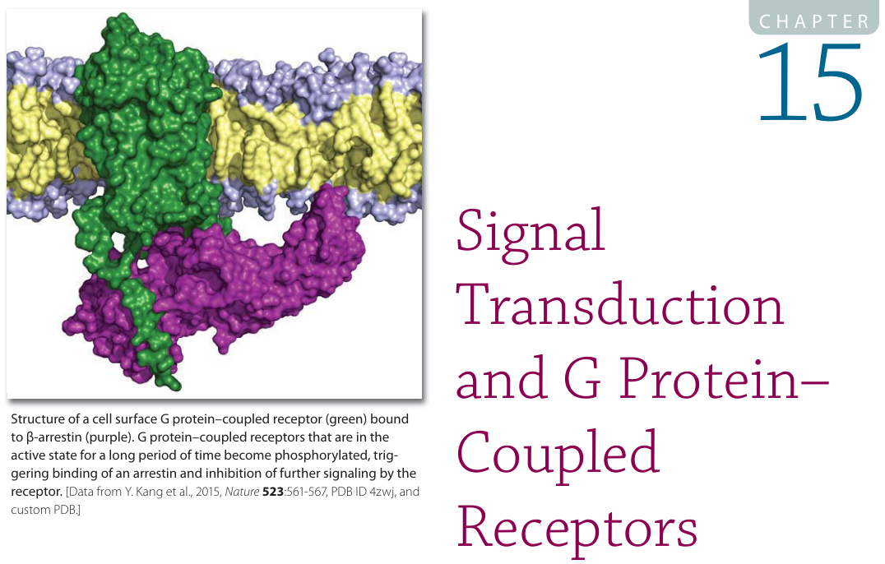
没有细胞是孤立存在的；生命要求所有细胞都能感知其环境中的化学物质与物理刺激，并以能够影响自身功能或发育的变化作出应答。许多细胞能感知光并作出应答：许多单细胞藻类具有趋光性（见第1章）；在本章后面我们将会看到，人视网膜中的细胞如何感知光并通过向大脑发送信号来作出应答。另一些细胞则感知触觉或热等物理刺激并作出应答。
大多数信号都是化学分子；其中许多，如气味分子、味觉分子（能够被尝到的物质），甚至氧气，都存在于几乎每一个后生动物细胞和生物体的环境中。许多类型的信号分子由一个细胞释放，并诱导另一个细胞作出应答；这一被称为细胞间通讯的基本过程塑造了每一个生物体的发育与功能。就连酵母、藻类、黏菌和原生动物等单细胞真核微生物也通过细胞外信号进行通讯。在下一章中，
我们将看到被称为信息素的分泌分子如何协调自由生活的酵母细胞聚集以进行有性交配。
在多细胞植物和动物中更为重要的是激素和其他细胞外信号分子，它们在生物体内发挥作用，控制着多种过程，包括糖、脂肪和氨基酸的代谢；组织的生长与分化；小分子激素和许多蛋白质的合成与分泌；以及细胞内外液体的组成。许多类型的后生动物细胞还对来自外部环境的信号作出应答，包括光、氧气、气味分子和食物中的味觉分子。
在任何系统中，信号若要作用于靶标，就必须先被接收。在细胞中，信号只有在那些拥有能结合该信号的受体蛋白的靶细胞里才会产生特异性应答。对某些受体而言，这一信号是光、触觉或热。许多类型的化学物质都可充当信号：小分子
（例如氨基酸和脂质衍生物、类固醇、乙酰胆碱）、气体（例如氧气、一氧化氮）、肽类（例如促肾上腺皮质激素和加压素）、可溶性蛋白（例如胰岛素和生长激素），以及拴系在细胞表面或结合于细胞外基质的蛋白质。这些细胞外信号分子中的许多都是在多细胞生物体内由特化的信号细胞合成、包装进分泌囊泡并释放出来的。与酶一样，受体只结合单一类型的分子或一组密切相关的分子；与酶不同的是，受体并不催化所结合分子的化学转变。
一大类疏水性信号分子，主要是类固醇、类视黄醇和甲状腺素等分子，会自发扩散穿过质膜并与胞质溶胶中的受体结合（图15-1）。在多数情况下，正如我们在第9章所见，受体-激素复合物进入细胞核，结合DNA中的特定调控序列，并激活或抑制特定靶基因的表达。
在本章及下一章，我们关注的是那些体积太大、亲水性太强而无法扩散穿过质膜的细胞外信号分子。那么，它们如何影响细胞内过程呢？这些信号分子结合于细胞表面受体，这类受体是镶嵌在质膜中的整合膜蛋白。细胞表面受体通常由三个彼此独立的拓扑结构域（或称区段）组成：朝向细胞外液的胞外域、跨越质膜（跨膜）的结构域，以及朝向胞质溶胶的胞内域。信号分子充当配体，结合于受体胞外域或跨膜域上结构互补的位点。配体与其在受体上的位点结合，诱导受体发生构象变化，这一变化经跨膜域传递至胞质结构域。这种构象变化可使受体与胞质溶胶中或附着于质膜的其他蛋白结合，并进而激活或抑制它们。在许多情况下，这些被激活的蛋白催化特定小分子的合成，或改变某种胞内离子（如Ca2+）的浓度。这些胞内小分子第二信使随后把信号传递给一个或多个效应蛋白，例如酶或转录因子。
许多信号蛋白，包括第3章介绍的GTP结合"开关"蛋白和蛋白激酶，都属于在进化过程中高度保守的几大类信号转导蛋白。将细胞外信号转变为细胞内应答的整个过程，以及这一过程中的各个步骤，被称为信号转导；其中间物所构成的链称为信号通路，因为当信号从受体传递到其靶标时，它把信息从一种形式转导（即转换）为另一种形式。有些信号通路只包含两三个中间物，另一些则可涉及十几个以上。
如图15-1所示，信号转导始于细胞外信号分子与细胞表面受体的结合，它可以诱导两种主要类型的细胞
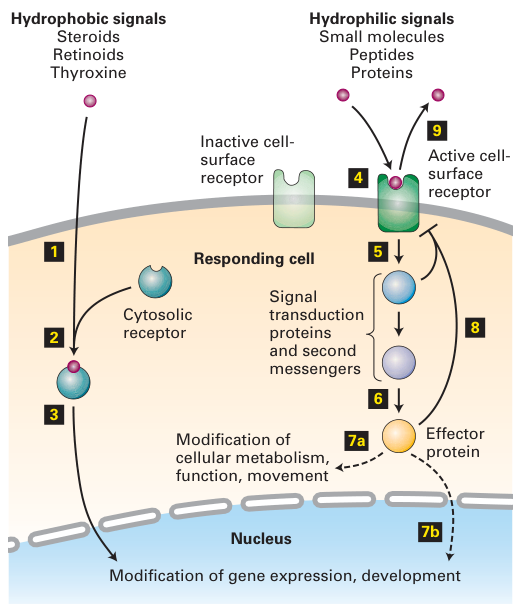
| Signal transduction proteins and second messengers | 信号转导蛋白与第二信使 |
| Inactive cell-surface receptor | 无活性细胞表面受体 |
| Active cell-surface receptor | 有活性细胞表面受体 |
| Cytosolic receptor | 胞质溶胶受体 |
| Effector protein | 效应蛋白 |
| Hydrophilic signals | 亲水性信号 |
| Hydrophobic signals | 疏水性信号 |
| Small molecules | 小分子 |
| Peptides | 肽 |
| Proteins | 蛋白质 |
| Steroids | 类固醇 |
| Retinoids | 类视黄醇 |
| Thyroxine | 甲状腺素 |
| Responding cell | 应答细胞 |
| Nucleus | 细胞核 |
应答。第一种（第7a步）涉及细胞中早已存在的特定酶和其他蛋白在活性或功能上发生的短期（数秒至数分钟）变化，这些变化通常通过磷酸化或泛素化等共价修饰，或通过结合cAMP、Ca2+等分子实现。第二种（第7b步）涉及特定转录因子的激活（或抑制），通常通过磷酸化或其他共价修饰实现，从而导致特定蛋白含量发生长期（数小时至
数天）的变化。
在真核生物中，大约有十几类细胞表面受体，它们激活若干类型的胞内信号通路。近年来我们对信号转导的认识大有进展，这在很大程度上是因为这些受体和通路高度保守，在蠕虫、果蝇、小鼠和人类等差异极大的生物中发挥的功能基本相同。遗传学研究结合生化分析，使研究者能够追踪从配体结合到最终细胞应答的许多完整信号通路。在本章中，我们首先回顾信号转导的一些一般原理，例如配体-受体结合的分子基础，以及信号通路中某些进化上保守的组分。接下来我们介绍如何用生化方法鉴定和表征细胞表面受体与信号转导蛋白。
随后我们深入讨论一个极其庞大且在进化上保守的受体家族，它们存在于从真菌到人类的各类生物中：G蛋白偶联受体。顾名思义，G蛋白偶联受体（GPCR）由一个整合膜受体蛋白与一个胞内G蛋白偶联而成，后者将信号传递到细胞内部。人类基因组编码800多种G蛋白偶联受体，约占已鉴定人类蛋白的4%。它们大多结合特定的小分子或肽，但也有少数结合蛋白质。GPCR包括视觉、嗅觉（气味）和味觉（味道）系统中的受体、许多神经递质受体，以及大多数控制碳水化合物、氨基酸和脂肪代谢乃至行为的激素受体。经由GPCR的信号转导最初诱导细胞功能的短期变化，如代谢或运动的变化，但其中许多信号通路也会导致基因表达的改变。我们将展示这些通路如何影响细胞功能的许多方面，包括葡萄糖代谢、肌肉收缩、光的感知和基因表达。
其他几大类细胞表面受体主要结合蛋白配体。这些受体的激活主要改变细胞的基因表达模式，导致细胞分化或分裂及其他长期后果，但也能对细胞产生短期效应。这些受体及其所激活的胞内信号通路将在第16章中探讨。在第22章中，我们将讨论主要局限于神经系统、与离子通道偶联的其他几类受体。
15.1 信号转导：从细胞外信号到细胞应答
在本节中，我们概述信号转导的主要步骤，从信号分子本身讲起。我们将探讨配体-受体结合的分子基础，以及信号与其受体结合后在靶细胞中引发的一系列事件，并着重介绍对许多信号通路都至关重要的几个组分。
信号分子既可在局部起作用，也可在远距离起作用
如上所述，细胞对许多不同类型的信号作出应答——有些源自生物体外部，有些则在体内产生。在体内产生的信号可以按其到达靶标的方式加以描述。有些信号分子由血液运输到很远的距离；另一些的作用则较为局部。在动物中，细胞外分子介导的信号传导可依据信号作用的距离分为三种类型（图15-2a-c）。
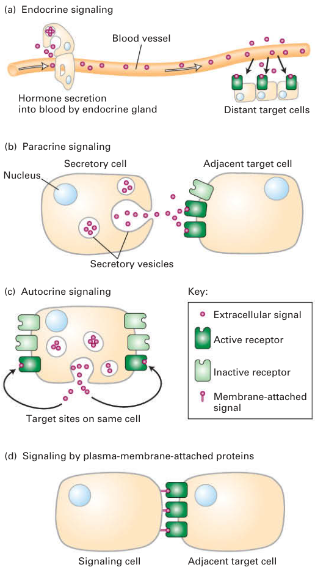
| Blood vessel | 血管 |
| Distant target cells | 远距离靶细胞 |
| Hormone secretion into blood by endocrine gland | 内分泌腺向血液中分泌激素 |
| Secretory cell | 分泌细胞 |
| Secretory vesicles | 分泌囊泡 |
| Nucleus | 细胞核 |
| Adjacent target cell | 邻近靶细胞 |
| Extracellular signal | 细胞外信号 |
| Active receptor | 有活性受体 |
| Inactive receptor | 无活性受体 |
| Membrane-attached signal | 膜附着信号 |
| Target sites on same cell | 同一细胞上的靶位点 |
| Signaling cell | 信号细胞 |
| Endocrine signaling | 内分泌信号传导 |
| Paracrine signaling | 旁分泌信号传导 |
| Autocrine signaling | 自分泌信号传导 |
在内分泌信号传导中，信号分子由信号细胞（例如内分泌腺中的细胞）合成并分泌，经生物体的循环系统运输，最终作用于远离其合成部位的靶细胞。激素一词通常指介导内分泌信号传导的信号分子。胰腺分泌的胰岛素和肾上腺分泌的肾上腺素，就是通过血液运输、因而介导内分泌信号传导的激素例子。
在旁分泌信号传导中，一个细胞释放的信号分子只影响紧邻的那些靶细胞。神经元释放神经递质（例如乙酰胆碱），作用于相邻的神经元或肌肉细胞（诱导或抑制肌肉收缩），就是旁分泌信号传导的一个例子。除神经递质外，多细胞生物中调节发育的许多蛋白生长因子也在短距离内起作用。其中一些蛋白紧密地结合于细胞外基质的组分，无法向相邻细胞发出信号；损伤或感染所引发的这些基质组分的后续降解，会释放这些生长因子并使它们能够发出信号。我们在第16章讨论的许多对发育重要的信号蛋白会从信号细胞扩散出去，形成浓度梯度，并依据该信号蛋白的浓度在相邻细胞中诱导不同的应答。
在自分泌信号传导中，细胞对它们自身释放的物质作出应答。某些生长因子就以这种方式起作用，培养的细胞常常分泌刺激自身生长和增殖的生长因子。这类信号传导尤其多见于肿瘤细胞，其中许多会过量产生并释放生长因子，刺激不恰当的、不受调控的自我增殖，这一过程可能导致肿瘤形成。
位于细胞表面的许多整合膜蛋白作为信号发挥着重要作用（图15-2d）。在某些情况下，一个细胞上的这类膜结合信号蛋白直接结合相邻靶细胞表面的受体，常触发其增殖或分化。在另一些情况下，膜结合信号蛋白经蛋白酶解切割释放出胞外段，后者作为可溶性信号分子发挥作用。
有些信号分子既可在短距离、也可在长距离起作用。例如，肾上腺素（又称adrenaline）作为对环境中突发危险的"战斗或逃跑"反应的一部分，以激素的方式发挥作用（内分泌信号传导），同时也作为神经递质发挥作用（旁分泌信号传导）。第16章讨论的另一个例子是表皮生长因子（EGF），它以整合质膜蛋白的形式合成。膜结合的EGF可结合相邻细胞上的受体。此外，被一种细胞外蛋白酶切割可释放出可溶形式的EGF，它既能以自分泌方式、也能以旁分泌方式发出信号。
受体只结合单一类型的激素或一组密切相关的激素
针对所有亲水性细胞外小分子、肽和蛋白信号分子的受体蛋白，都位于
靶细胞的表面。信号分子（即配体）以高特异性和高亲和力结合于受体胞外域上的一个位点。配体结合依赖于多种弱的非共价作用力（即离子作用、范德华力和疏水相互作用）以及受体与配体相互作用表面之间的分子互补性（见图2-12）。与酶一样，每一类受体只结合单一类型的信号分子或一组极为相近的分子。例如，生长激素受体结合生长激素，但不结合结构非常相似（尽管并不完全相同）的其他激素。类似地，乙酰胆碱受体只结合这一小分子，而不结合化学结构与之仅有微小差别的其他分子；胰岛素受体则结合胰岛素以及称为胰岛素样生长因子1和2（IGF-1和IGF-2）的相关激素，但不结合其他激素。受体的结合特异性指的是它结合或不结合密切相关物质的能力。
配体与受体的结合引起受体发生构象变化，从而启动一系列反应，最终导致细胞内产生特定的应答。生物体已经进化到能够用同一种配体刺激不同细胞以不同方式作出应答。不同细胞类型对同一配体往往具有不同的受体，而每一类受体的激活都会诱导不同的胞内信号通路。例如，骨骼肌细胞、心肌细胞以及产生水解性消化酶的胰腺腺泡细胞，其表面各自具有不同类型的乙酰胆碱受体。在骨骼肌细胞中，支配该细胞的运动神经元释放乙酰胆碱，通过激活乙酰胆碱门控离子通道触发肌肉收缩。在心肌中，某些神经元释放乙酰胆碱会激活一种G蛋白偶联受体，减慢收缩速率，从而减慢心率。乙酰胆碱对胰腺腺泡细胞的刺激会引发胞质溶胶Ca2+浓度升高，从而诱导储存在分泌颗粒中的消化酶分泌，以促进进食后的消化。因此，乙酰胆碱激活在不同细胞类型中表达的不同类型乙酰胆碱受体，导致不同的细胞应答。
另一种情况是，同一种受体可能存在于生物体的多种细胞类型上，但特定配体与该受体结合后，在每一类细胞中触发的应答各不相同，这取决于该细胞表达的特定蛋白质组合。同一种肾上腺素受体（即β肾上腺素能受体）存在于肝细胞、肌细胞和脂肪（脂）细胞上；正如我们将在15.5节看到的那样，它在前两种细胞中刺激糖原解聚为葡萄糖，而在脂肪细胞中则刺激储存脂肪的水解与分泌。通过这些方式，同一配体可以使不同细胞以多种方式作出应答，而且往往以协调生物体整体应答的方式进行。这一性质被称为受体-配体复合物的效应器特异性。
蛋白激酶和磷酸酶被用于许多信号通路
几乎所有细胞表面受体的激活，都直接或间接地导致蛋白质磷酸化状态通过
蛋白激酶的激活而改变，蛋白激酶是把磷酸基团加到靶蛋白特定残基上的酶。有些受体则激活蛋白磷酸酶，后者去除靶蛋白特定残基上的磷酸基团。磷酸酶与激酶协同作用，把各种靶蛋白的功能开启或关闭（图15-3）。
人类基因组编码约600种蛋白激酶和100种不同的磷酸酶。一般而言，每种蛋白激酶都在一组特定的靶蛋白（即底物蛋白）中磷酸化特定的氨基酸残基，而这些蛋白的表达模式在不同细胞类型中通常不同。动物细胞含有两类蛋白激酶：一类把磷酸加到酪氨酸残基的羟基上（蛋白酪氨酸激酶），另一类把磷酸加到丝氨酸或苏氨酸（或两者）残基的羟基上（蛋白丝氨酸/苏氨酸激酶）。我们将在本章和下一章看到，所有已知蛋白激酶的催化亚基都具有相似的三维结构，包括一个N端叶和一个C端叶；高度保守的氨基酸聚集在催化位点周围，是结合ATP所必需的。所有激酶识别其特定底物时，不仅结合待磷酸化的侧链，还结合围绕该磷酸化残基的特定氨基酸。因此，人们可以分析蛋白质中酪氨酸、丝氨酸和苏氨酸残基周围的氨基酸序列，从而很好地预测哪些激酶可能会磷酸化这些残基。
许多蛋白质是多种激酶的底物，这些激酶通常各自磷酸化该蛋白中不同的氨基酸。每一次磷酸化事件都有可能以不同方式修饰某一特定靶蛋白的活性，
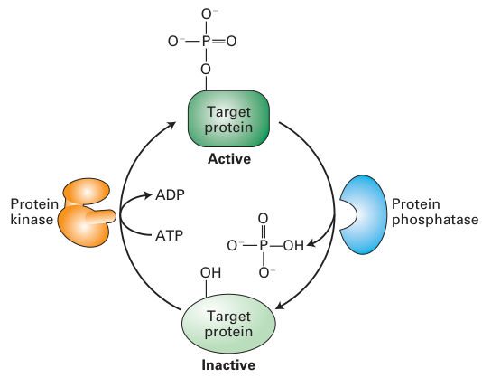
| Protein kinase | 蛋白激酶 |
| Protein phosphatase | 蛋白磷酸酶 |
| ATP | ATP |
| ADP | ADP |
| Target protein | 靶蛋白 |
| Active | 有活性 |
| Inactive | 无活性 |
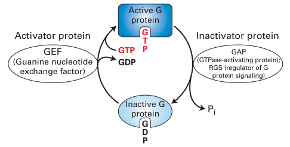
| GEF (Guanine nucleotide exchange factor) | GEF（鸟嘌呤核苷酸交换因子） |
| Activator protein | 激活蛋白 |
| GAP (GTPase-activating protein) | GAP（GTP酶激活蛋白） |
| RGS (regulator of G protein signaling) | RGS（G蛋白信号调节蛋白） |
| Inactivator protein | 失活蛋白 |
| Pi | Pi |
| Active G protein | 有活性G蛋白 |
| Inactive G protein | 无活性G蛋白 |
| GTP | GTP |
| GDP | GDP |
有些激活其功能，有些则抑制其功能。我们后面会遇到的一个例子是糖原磷酸化酶激酶，它是葡萄糖代谢中的一个关键调节酶（见下文图15-29）。在许多情况下，磷酸基团加到某个氨基酸上会形成一个结合表面，使第二种蛋白得以结合；在下一章中，我们将遇到许多这类由激酶驱动的多蛋白复合物组装例子。
通常，蛋白激酶自身的催化活性会受到其他激酶对其的磷酸化、其他蛋白与它的结合，以及各种胞内小分子信号分子和代谢物浓度变化的调节。重要的是，所有蛋白激酶的活性都受到蛋白磷酸酶活性的对抗，而其中一些磷酸酶本身又受细胞外信号的调控。因此，细胞中某种蛋白质的活性可能是作用于它的（通常是多种）激酶与磷酸酶活性的复杂函数。第19章描述了细胞周期调控中出现的这一现象的若干例子。
GTP结合蛋白常被用作信号转导通路中的开/关开关
许多细胞过程都利用GTP酶超家族的蛋白成员，它们存在于所有原核细胞和真核细胞中。所有这些GTP结合开关蛋白都以两种形式存在（图15-4）：(1) 结合GTP（三磷酸鸟苷）的活性（"开"）形式，它调节特定靶蛋白的活性；(2) 结合GDP（二磷酸鸟苷）的无活性（"关"）形式，它不能影响靶蛋白的活性。GTP酶超家族的成员在GTP结合的"开"形式和GDP结合的"关"形式之间转换。这些蛋白在进化上十分古老，这一点可由它们在蛋白质合成中的广泛功能佐证［例子包括eIF2起始因子的作用（图5-23），以及EF1α和EF2
蛋白在蛋白质延伸中的作用（图5-24）；蛋白质在细胞核与细胞质之间的运输（Ran，图13-36）；转运囊泡的形成（Sar蛋白，图14-8）及其与靶膜的融合（Rab蛋白，图14-10）；以及肌动蛋白细胞骨架的重排（Rho、Rac和Cdc42蛋白，见第17章）］。
这里我们关注的是该超家族中在信号通路里发挥作用的成员，在这些通路中，活性GTP结合态与无活性GDP结合态之间的转换受到严格调控。从无活性态向活性态的转换通常由某种信号触发（例如激素与受体结合），并由鸟嘌呤核苷酸交换因子（GEF）介导，后者使GDP从开关蛋白上释放。随后GTP的结合（由于其胞内浓度远高于GDP而更受青睐）诱导蛋白发生构象变化而转变为活性形式。主要的构象变化涉及GTP结合蛋白的两个高度保守区段，称为开关I和开关II，它们使该蛋白能够结合并激活下游信号蛋白（图15-5）。从活性形式变回无活性形式由GTP酶介导，GTP酶常常就是开关蛋白自身的一部分，它缓慢地将结合的GTP水解为GDP和Pi，从而改变开关I和开关II区段的构象，使其无法与靶效应蛋白结合。
GTP水解的速率决定了开关蛋白保持活性构象并能够向下游靶蛋白发出信号的时间长短：水解速率
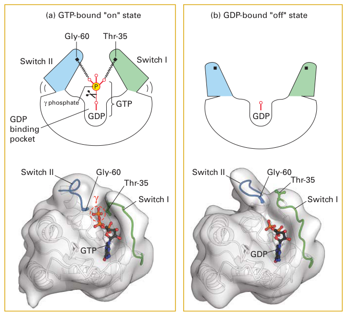
| Thr-35 | 苏氨酸35 |
| Gly-60 | 甘氨酸60 |
| phosphate | 磷酸 |
| GDP binding pocket | GDP结合口袋 |
| Switch I | 开关I |
| Switch II | 开关II |
| GTP-bound “on” state | GTP结合的“开”状态 |
| GDP-bound “off” state | GDP结合的“关”状态 |
| GTP | GTP |
| GDP | GDP |
越慢，蛋白保持活性状态的时间就越长。GTP水解速率常常受到其他蛋白的调节。例如，GTP酶激活蛋白（GAP）和G蛋白信号调节蛋白（RGS）都能加速GTP水解（见图15-4）。许多G蛋白活性调节物本身又受细胞外信号的控制。
信号传导中使用的GTP酶开关蛋白有两大类。异三聚体G蛋白直接结合某些细胞表面受体并被其激活。正如我们将在15.3节看到的，G蛋白偶联受体的功能就是鸟嘌呤核苷酸交换因子（GEF），它们通过促使所偶联的异三聚体G蛋白释放GDP并结合GTP来将其激活。单体（常称为低分子量）G蛋白，包括Ras以及Ran和Sar等各种Ras样蛋白，并不直接与受体结合，但在许多调控细胞分裂和细胞运动的通路中起着关键作用，这一点可由以下事实佐证：编码这些G蛋白的基因发生突变时常导致癌症。
胞内"第二信使"传递来自许多受体的信号
配体（"第一信使"）与许多细胞表面受体的结合，会导致某些被称为第二信使的非蛋白、低分子量胞内信号分子浓度发生短暂升高（或降低）。这些分子随后与蛋白质结合，修饰其活性。
几乎所有后生动物细胞都使用的一种第二信使是钙（Ca2+）离子。我们在第11章指出，胞质溶胶中游离Ca2+的浓度维持在很低水平（约10−7 M），部分原因在于ATP驱动的泵不断地把Ca2+运出细胞或运入内质网（ER）。通过在相应膜上钙通道的开放，信号诱导的Ca2+从ER腔或细胞外环境中释放，可使胞质溶胶Ca2+浓度升高十倍至一百倍；这一变化可用导入细胞的荧光染料检测到（见图4-12）。在肌肉中，信号诱导的胞质溶胶Ca2+升高触发收缩（见图17-34）。在内分泌细胞中，Ca2+的类似升高诱导含激素的分泌囊泡胞吐，激素由此释放进入循环系统。在神经元中，胞质溶胶Ca2+升高导致含神经递质的囊泡胞吐（见第22章）。在所有细胞中，胞质溶胶Ca2+的这种升高都被Ca2+结合蛋白感知，尤其是EF手家族的那些蛋白，例如钙调蛋白，它们都含有螺旋-环-螺旋基序（见图3-10b）。Ca2+与钙调蛋白及其他EF手蛋白的结合引起构象变化，使这些蛋白能够结合各种靶蛋白，从而开启或关闭它们的活性（见图3-33）。Ca2+的升高常常局限于胞质溶胶的特定区域，使某一过程——例如分泌囊泡的胞吐——能在该处发生而不影响细胞其他部位的其他过程。
另一种几乎普遍存在的第二信使是环腺苷酸（cAMP）。在许多真核细胞中，cAMP升高会触发一种特定蛋白激酶——蛋白激酶A——的激活，后者进而磷酸化特定的靶蛋白，诱导细胞代谢发生特定变化。在某些细胞中，cAMP调节某些离子通道的活性。cAMP以及另外三种常见第二信使的结构见图15-6。本章后面我们将考察第二信使在各种G蛋白偶联受体所激活的信号通路中的具体作用。
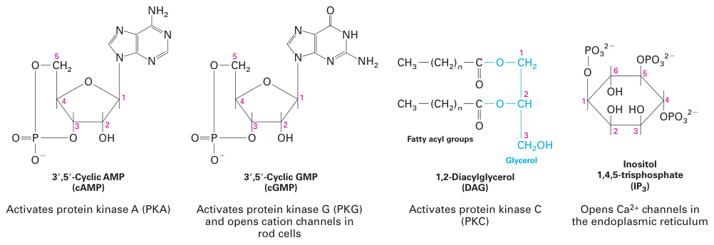
| Cyclic AMP (cAMP) | 环腺苷酸（cAMP） |
| Activates protein kinase A (PKA) | 激活蛋白激酶A（PKA） |
| Cyclic GMP (cGMP) | 环鸟苷酸（cGMP） |
| Activates protein kinase G (PKG) and opens cation channels in rod cells | 激活蛋白激酶G（PKG）并打开视杆细胞中的阳离子通道 |
| Fatty acyl groups | 脂酰基 |
| Glycerol | 甘油 |
| 1,2-Diacylglycerol (DAG) | 1,2-二酰甘油（DAG） |
| Activates protein kinase C (PKC) | 激活蛋白激酶C（PKC） |
| Inositol 1,4,5-trisphosphate (IP3) | 肌醇1,4,5-三磷酸（IP3） |
| Opens Ca2+ channels in the endoplasmic reticulum | 打开内质网中的Ca2+通道 |
信号转导通路能放大细胞外信号的效应
多种信号转导蛋白常常组合成一条信号通路，使单一类型的细胞表面受体能够激活（或抑制）多个靶蛋白。图15-7描绘了许多G蛋白偶联受体下游的一条典型信号通路。在这里，激素的结合触发受体发生构象变化，通过催化GTP与GDP的交换导致G蛋白活化。活化的G蛋白结合并激活一种合成第二信使的酶；这种小分子结合并激活一种蛋白激酶，后者进而磷酸化一个或多个靶蛋白，从而改变其活性。这一多蛋白通路的一个具体例子——激素肾上腺素对肝脏中糖原代谢的调节——在15.5节中详述，参与该通路的分子列在图15-7的括号中。
信号通路中蛋白质级联反应的一个重要优势在于，它有利于细胞外信号的放大。单个细胞表面受体蛋白的激活，可使胞质溶胶中cAMP分子或Ca2+离子增加数千个。而这些分子中的每一个又可以通过激活其靶蛋白激酶或其他信号转导蛋白，影响多个下游蛋白的活性。在许多信号通路中，放大是必要的，因为细胞表面受体通常属于低丰度蛋白，每个细胞仅有约一千份拷贝，而相对少量的激素与可用受体结合所诱导的细胞应答，往往需要每个细胞产生数万至数十万个活化效应分子。就G蛋白偶联激素受体而言，信号放大之所以可能，部分原因是在激素保持结合期间，单个受体可以激活多个G蛋白，其中每一个
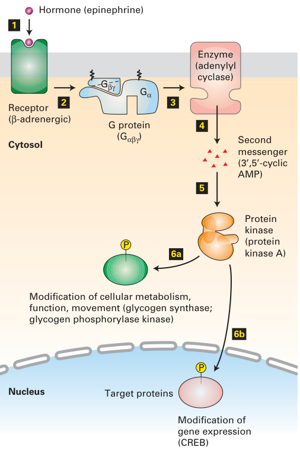
| Second messenger (3',5'-cyclic AMP) | 第二信使（3',5'-环腺苷酸） |
| Protein kinase (protein kinase A) | 蛋白激酶（蛋白激酶A） |
| Hormone (epinephrine) | 激素（肾上腺素） |
| Receptor (β-adrenergic) | 受体（β肾上腺素能） |
| G protein (Gαs) | G蛋白（Gαs） |
| Target proteins | 靶蛋白 |
| Modification of gene expression (CREB) | 基因表达的改变（CREB） |
| Modification of cellular metabolism, function, movement (glycogen synthase; glycogen phosphorylase kinase) | 细胞代谢、功能、运动的改变（糖原合酶；糖原磷酸化酶激酶） |
| Enzyme (adenylyl cyclase) | 酶（腺苷酸环化酶） |
| Cytosol | 胞质溶胶 |
| Nucleus | 细胞核 |
又依次激活一个效应蛋白。在15.5节中，我们将看到这一放大级联如何使低至10−10 M的血液肾上腺素水平即可刺激肝脏将糖原转化为葡萄糖并把葡萄糖释放入血；在图15-30中，我们将看到这种放大如何调控许多基因的表达。
- 许多细胞能感知光或触觉、热等物理刺激并作出应答。
- 所有细胞都通过细胞外信号进行通讯。在单细胞生物中，细胞外信号分子调节个体之间的相互作用；而在多细胞生物中，它们主要调节生理与发育。
- 外部信号包括膜锚定和分泌的蛋白或肽（例如加压素和胰岛素）、小的疏水分子（例如类固醇激素和甲状腺素）、小的亲水分子（例如肾上腺素）、气体（例如O2、一氧化氮），以及物理刺激（例如光）。
- 疏水性信号分子与胞质溶胶受体相互作用，主要影响基因表达。
- 亲水性细胞外信号分子与细胞表面受体的结合触发受体发生构象变化，进而导致胞内信号通路的激活，最终调节细胞的代谢、功能或基因表达（见图15-1）。
- 来自一个细胞的信号在内分泌信号传导中作用于远处的细胞，在旁分泌信号传导中作用于邻近的细胞，在自分泌信号传导中作用于发出信号的细胞自身（见图15-2）。
- 由蛋白激酶和磷酸酶催化的蛋白质磷酸化与去磷酸化，几乎被用于所有信号通路。激酶和磷酸酶的活性受到许多受体和信号转导蛋白的高度调控（见图15-3）。
- GTP酶超家族的GTP结合蛋白作为开关，调控许多信号通路（见图15-4和图15-5）。
- 某些非蛋白、低分子量的胞内分子，如Ca2+和cAMP（见图15-6），充当"第二信使"，传递并常常放大"第一信使"（即配体）的信号。配体与细胞表面受体的结合常导致这些离子或分子的胞内浓度迅速升高（偶尔降低）。
- 信号转导通路能放大细胞外信号，使相对少量的细胞表面受体被激活即可触发细胞代谢、运动或基因表达的显著变化。
15.2 研究细胞表面受体与信号转导蛋白
细胞对外部信号的反应，取决于该细胞识别该信号的全套受体，以及由这些受体激活的信号转导通路。在本节中，我们探讨受体-配体结合特异性的生化基础，以及不同浓度的配体激活一条通路的能力。我们还考察用于表征受体蛋白的实验技术。这些方法中有许多也适用于介导内吞（见第14章）或细胞黏附（见第20章）的受体。我们在本节最后讨论一些常用技术，它们用于测量信号转导通路组分（如激酶和GTP结合的"开关"蛋白）的活性。
解离常数是衡量受体对其配体亲和力的指标
单个配体与受体的结合通常可以看作一个简单的可逆反应，其中受体表示为R，配体表示为L，受体-配体复合物表示为RL：
其中kon是游离配体与受体形成受体-配体复合物的速率常数，koff是配体从其受体上解离的速率常数。我们定义[R]和[L]分别为游离受体（即未结合配体的受体）和配体的浓度，[RL]为受体-配体复合物的浓度。
在平衡时，受体-配体复合物的形成速率[R][L]kon等于其解离速率[RL]koff：因此在平衡时，[R][L]kon = [RL]koff。这种情况可以用简单的平衡结合方程Kd = koff/kon来描述，其中Kd即解离常数，是衡量受体对其配体亲和力（或结合的紧密程度）的指标（见第2章）。
等价地，我们可以把这个平衡方程写成
解离常数越小，受体-配体复合物越稳定。理解这一要点的另一种方式是：当配体浓度等于Kd（[L] = Kd）时，游离受体的浓度[R]必定等于受体-配体复合物的浓度[RL]。也就是说，系统处于平衡时，一半的受体结合有配体。Kd越小，结合50%细胞表面受体所需的配体浓度就越低。这里结合反应的Kd
与米氏常数Km相似，后者反映酶对其底物的亲和力（见第3章）。
大多数激素-受体系统都处于精密的平衡之中：激素过多或过少都会引起麻烦。以肿瘤坏死因子α（TNFα）这种激素为例，它由多种免疫系统细胞分泌。TNFα通过结合几种免疫系统细胞上的TNFα受体、把这些细胞募集到损伤或感染部位而诱发炎症；因此，身体需要产生足够的TNFα以防御感染，但TNFα水平异常升高会导致自身免疫性疾病患者中出现的过度炎症，例如水疱性皮肤病银屑病或关节病类风湿性关节炎。这些疾病正在通过减少关节中或体内循环的TNFα量的药物来治疗。其中一种药物正是基于这样的原理：激素受体的特征是对其配体具有高亲和力和特异性。这种药物是一种嵌合"融合"蛋白，通过重组DNA技术产生，它含有TNFα受体的胞外TNFα结合结构域，与人免疫球蛋白的恒定区（Fc）融合（见图3-21和图23-9）。这种水溶性药物可以注射到体内，在那里它与潜在危险的游离TNFα紧密结合，阻止它结合细胞表面受体并引起炎症；融合的Fc结构域使该蛋白在注射入体内时保持稳定。■
结合实验用于检测受体并测定其对配体的亲和力和特异性
受体通常通过其结合放射性或荧光标记配体的能力来检测和定量，这些配体被加入到完整细胞或细胞碎片周围的液体中。这种实验基于这样一个概念：受体的总数[RT]等于游离受体的数目[R]加上结合了配体的受体数目[RL]。
加入浓度递增的配体会导致细胞表面受体-配体复合物[RL]的量不断增加；随着配体浓度升高，受体-配体复合物的数量趋近但永远不会真正达到细胞表面受体的总数[RT]。在大多数情况下，加入的配体量远远超过细胞表面受体的量，因此可以假定游离配体的浓度[L]等于加入反应中的配体浓度。因此，在这些反应中，只需测量每个加入的配体浓度下结合到表面受体上的配体量[RL]。
以结合到受体上的配体量[RL]对游离配体量[L]作图，通常遵循方程15-4，后者只是
方程15-2和15-3的代数变形。典型的配体结合曲线可见于图15-8中的红线。
通常使用计算机曲线拟合程序来算出RT和Kd值。用这种方法，可以从这条结合曲线算出每个细胞表面有1000个受体，且该配体结合的解离常数Kd为1 × 10⁻⁹ M，即1 nM。
对信号分子的近最大细胞应答通常不需要激活全部受体
信号系统已经进化到这样的程度：细胞外信号分子水平的升高会在应答细胞中诱导出成比例的反应。要做到这一点，细胞表面受体对某一信号分子的结合亲和力（Kd值）必须比该信号分子在细胞外液或血液中正常的未刺激水平大得多。我们可以通过比较体内胰岛素的水平与胰岛素结合肝细胞上其受体的Kd值（1.4 × 10⁻¹⁰ M，即0.14 nM）来实际观察这一原理。例如，假设血液中胰岛素的正常浓度为5 × 10⁻¹² M。把这个L值和Kd代入方程15-2，我们可以算出平衡时结合有胰岛素的胰岛素受体比例[RL]/[RT]为0.0344；也就是说，约3%的胰岛素受体总数将结合有胰岛素。如果胰岛素浓度升高五倍达到2.5 × 10⁻¹¹ M，就像餐后那样，受体-激素复合物的数量也将成比例地增加，几乎增加五倍，因此约15%的受体总数将结合有胰岛素。如果诱导的细胞应答程度与胰岛素-受体复合物[RL]的数量平行（情况常常如此），那么细胞应答也将增加约五倍。
另一方面，假设血液中胰岛素的正常浓度与Kd值1.4 × 10⁻¹⁰ M相同；在这种情况下，50%的受体总数将结合有胰岛素。胰岛素浓度增加五倍达到7 × 10⁻¹⁰ M，将导致所有胰岛素受体的83%结合有胰岛素（仅增加66%）。因此，要使激素浓度的升高引起结合配体的受体比例成比例地增加，Kd值必须远大于激素的正常浓度。
一般来说，对特定配体的最大细胞应答是在远低于100%的受体与该配体结合时被诱导的。这一现象可以通过比较不同配体浓度下应答的程度与
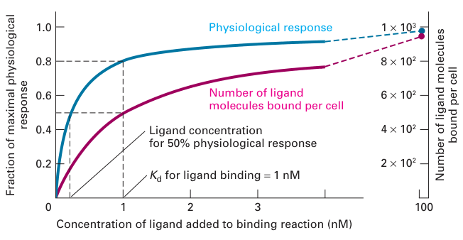
| Kd for ligand binding | 配体结合的Kd |
| Fraction of maximal physiological response | 最大生理应答的比例 |
| Number of ligand molecules | 配体分子数 |
| Physiological response | 生理应答 |
| Ligand concentration | 配体浓度 |
受体-配体的结合来揭示（见图15-8）。例如，骨髓中的一种细胞（称为红细胞前体细胞）有1000个促红细胞生成素（EPO）的表面受体，这种蛋白激素诱导这些细胞增殖并分化为红细胞；促红细胞生成素结合的解离常数Kd为1 nM。但其中只需180个受体（占18%）结合EPO就能诱导50%的最大细胞应答。因此，产生显著细胞应答（在此例中即前体细胞分裂）所需的配体浓度远低于Kd值。在这类情况下，以最大结合的百分比对配体浓度作图，与以最大细胞应答的百分比对配体浓度作图是不同的。
细胞对外部信号的敏感性由细胞表面受体的数目及其对配体的亲和力决定
由于对某一信号分子的细胞应答取决于受体-配体复合物的数量，因此细胞表面存在的某种配体的受体越少，细胞对该配体就越不敏感。其结果是，与存在更多受体的情况相比，需要更高的配体浓度才能诱导生理应答。相反，如果某种配体的受体水平升高，细胞将对该配体变得更敏感。
表皮生长因子（EGF）正如其名，刺激许多类型上皮细胞的增殖（见第16章和第20章），包括衬在乳腺导管中的上皮细胞。约25%的乳腺癌中，肿瘤细胞的一种特定EGF受体——称为HER2——水平升高。HER2的过量产生使细胞对周围环境水平的EGF及相关激素高度敏感，而这些激素通常低到不足以刺激细胞增殖；其结果是，这些肿瘤细胞的生长被EGF不恰当地刺激。我们将在第24章看到，对HER2在某些乳腺癌中作用的认识，促成了能结合HER2并由此阻断EGF信号传导的单克隆抗体的开发；这些抗体已被证明可用于治疗肿瘤过表达HER2的乳腺癌患者。■
HER2与乳腺癌的联系生动地表明，细胞对某一信号分子所表达受体数量的调节，在引导生理和发育事件中起着关键作用。这种调节可以发生在转录、翻译和翻译后加工的水平，也可以通过控制受体降解的速率来实现。另外，细胞表面受体的内吞可以把受体数量减少到足以有效消除细胞应答的程度。正如我们将在后面几节讨论的，其他机制可以降低受体对配体的亲和力，从而降低细胞对给定浓度配体的应答。因此，细胞对某一配体敏感性的降低——称为脱敏——对细胞恰当应答外部信号的能力至关重要，它可以由多种机制引起。
激素类似物被广泛用作药物
天然激素的合成类似物既广泛用于细胞表面受体的研究，也广泛用作药物。这些类似物分为两大类。激动剂通过与受体结合并诱导该激素的正常细胞应答来模拟天然激素的功能。许多合成激动剂与受体的结合比天然激素紧密得多。相反，拮抗剂与受体结合但不诱导任何应答。通过占据受体上的配体结合位点，拮抗剂可以阻断天然激素（或激动剂）的结合，从而降低该激素通常的生理活性。换句话说，拮抗剂抑制受体信号传导。
以用于治疗哮喘的药物异丙肾上腺素为例。异丙肾上腺素是通过在肾上腺素上化学添加两个甲基制成的（图15-9）。异丙肾上腺素是支气管平滑肌细胞上β2肾上腺素应答性G蛋白偶联受体的激动剂，其结合比肾上腺素强约十倍（Kd低十倍）。由于这些受体的激活促进支气管平滑肌舒张，从而使肺内气道开放，因此异丙肾上腺素和其他激动剂被用于治疗支气管哮喘、慢性支气管炎和肺气肿。相反，激活心肌细胞上另一种肾上腺素应答性G蛋白偶联受体（称为β1肾上腺素能受体）会提高心脏收缩速率。该受体的拮抗剂，如阿普洛尔（见图15-9）及相关化合物，被称为β受体阻滞剂；这类拮抗剂用于在心律失常和心绞痛的治疗中减慢心脏收缩。■
受体可通过亲和层析技术纯化
为了充分理解受体如何发挥功能，有必要将其纯化，并详细表征其结构和生化特性。例如，测定受体在结合配体与未结合配体时的分子结构，可以阐明配体结合时发生的、能激活下游信号转导蛋白的构象变化。但是，把细胞表面受体与其他细胞蛋白分开非常具有挑战性。一个"典型的"哺乳动物细胞有1000到50,000个单一类型细胞表面受体的拷贝。这看起来似乎是个很大的数目，
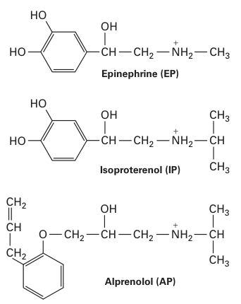
| Epinephrine (EP) | 肾上腺素（EP） |
| Alprenolol (AP) | 阿普洛尔（AP） |
| Isoproterenol (IP) | 异丙肾上腺素（IP） |
但当你考虑到同一个细胞含有约10¹⁰个总蛋白分子，其中仅质膜中就有约10⁶个时，你就会意识到这些受体只占质膜蛋白的0.1%到5%。这种低丰度使细胞表面受体的分离和纯化变得复杂。这些整合膜蛋白的纯化也很困难，因为必须先用非离子型去垢剂把膜增溶（见图7-23），而且条件要能维持受体的三维结构及其结合配体的能力。之后才能把受体与其他细胞分子分开。
重组DNA技术常常可以用来产生大量表达受体蛋白的细胞。但即使使用这类技术，也需要特殊的技术才能把受体与其他膜蛋白分离。在纯化那些被去垢剂增溶后仍保持配体结合能力的细胞表面受体时，常用的一种技术是某种亲和层析（见图3-40c）。把能识别受体或受体配体的抗体化学交联到用于装柱的微珠上。然后把用去垢剂增溶的粗制膜蛋白制品通过该柱。只有受体蛋白连同与它紧密结合的其他蛋白会特异性地黏附在柱上；其他蛋白则被洗去。一旦其他蛋白被去除，就可以通过让过量可溶性配体通过柱子（配体亲和层析），或利用化学条件（例如改变pH）使受体从抗体上释放（抗体亲和层析），把受体从柱上释放（"洗脱"）下来。在某些情况下，一步亲和层析就可以把受体纯化高达100,000倍。
免疫沉淀实验和亲和技术可用于研究信号转导蛋白的活性
配体结合后，受体激活一种或多种信号转导蛋白，这些蛋白又能影响多个靶效应蛋白的活性（见图15-1和图15-7）。理解一条信号级联需要研究者能够定量测量这些信号转导蛋白的活性。激酶和GTP结合蛋白存在于许多信号级联中；在本节中，我们介绍几种用于测量其活性的实验方法。
激酶的免疫沉淀 激酶几乎在所有信号通路中发挥功能。典型的哺乳动物细胞含有上百种或更多不同类型的激酶，每一种都受到高度调控，并能磷酸化许多靶蛋白。免疫沉淀实验——一种抗体亲和层析（见图3-40c）——常被用来测量细胞提取物中某一特定
激酶的活性。在这一方法的一种形式中，先把针对目标激酶的特异性抗体与包被了蛋白A的小珠一起孵育；这使抗体通过其Fc段与小珠结合（见图4-33）。然后把小珠与全细胞或某种细胞器（如细胞核）的提取物混合，再通过离心回收，并用盐溶液充分洗涤，以去除不太可能与抗体特异性结合的弱结合蛋白。因此，只有与抗体特异性结合的细胞蛋白——激酶本身以及与激酶紧密结合的蛋白——存在于小珠上。然后把小珠在缓冲溶液中与一种底物蛋白和γ-[³²P]ATP一起孵育，其中只有ATP的γ磷酸基团被放射性标记。转移到该底物蛋白上的[³²P]量是激酶活性的一个量度，可以通过聚丙烯酰胺凝胶电泳后进行放射自显影（见图3-38）来定量，也可以用针对该底物的特异性抗体进行免疫沉淀后测量免疫沉淀物中的放射性来定量。例如，通过比较加入配体前与加入配体后细胞的提取物，就可以容易地确定某一特定激酶是否在该配体触发的信号转导通路中被激活。
用特异性识别磷酸化肽的单克隆抗体进行Western印迹 我们在上面提到，许多蛋白可被几种不同的激酶磷酸化，通常发生在不同的丝氨酸、苏氨酸或酪氨酸残基上。因此，测量特定蛋白质中单个氨基酸侧链的磷酸化程度很重要，通常是在加入配体之前和之后测量。抗体在检测这类磷酸化事件中起着关键作用。要产生能识别某一特定蛋白质中特定磷酸化氨基酸的抗体，首先要用化学方法合成一段约15个氨基酸的肽，其氨基酸序列是该特定蛋白质中磷酸化氨基酸周围的序列，并把磷酸基团化学连接至目标丝氨酸、苏氨酸或酪氨酸上。在这段肽与一种佐剂偶联（见第23章）以增强其免疫原性之后，用它产生一组单克隆抗体（见图4-6）。然后选出一种只与磷酸化肽反应、而不与非磷酸化肽反应的特定单克隆抗体；这样的抗体通常只有在同一氨基酸被磷酸化时才会与亲本蛋白结合。这种特异性之所以可能，是因为该抗体同时结合磷酸化的氨基酸以及相邻氨基酸的侧链。作为这类抗体应用的一个例子，图15-10显示，红细胞前体细胞中的三种信号转导蛋白在受到不同浓度促红细胞生成素刺激后10分钟内，即在特定氨基酸残基上发生磷酸化；磷酸化是触发这些细胞向红细胞分化的第一步，它随EPO浓度升高而增加。
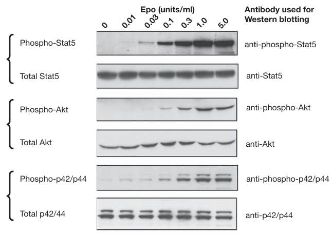
| anti-phospho-Stat5 | 抗磷酸化Stat5 |
| anti-phospho-p42/p44 | 抗磷酸化p42/p44 |
| anti-p42/p44 | 抗p42/p44 |
| anti-phospho-Akt | 抗磷酸化Akt |
| anti-Akt | 抗Akt |
| anti-Stat5 | 抗Stat5 |
| Phospho-Stat5 | 磷酸化Stat5 |
| Total Stat5 | 总Stat5 |
| Phospho-Akt | 磷酸化Akt |
| Total Akt | 总Akt |
| Phospho-p42/p44 | 磷酸化p42/p44 |
| Total p42/44 | 总p42/44 |
| Antibody used for Western blotting | 用于Western印迹的抗体 |
| Epo (units/ml) | Epo（单位/ml） |
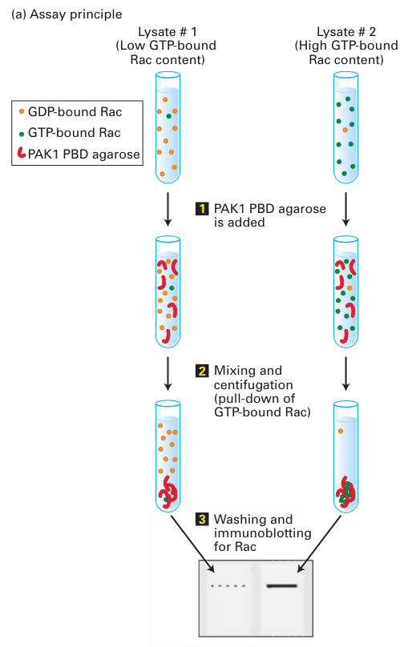
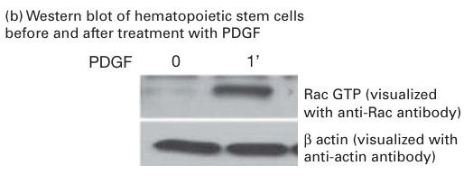
| Lysate # 1 | 裂解液#1 |
| Lysate # 2 | 裂解液#2 |
| Low GTP-bound Rac content | 低GTP结合的Rac含量 |
| High GTP-bound Rac content | 高GTP结合的Rac含量 |
| GDP-bound Rac | 结合GDP的Rac |
| GTP-bound Rac | 结合GTP的Rac |
| PAK1 PBD agarose | PAK1 PBD琼脂糖 |
| Assay principle | 实验原理 |
| Mixing and centrifugation | 混合与离心 |
| Washing and immunoblotting for Rac | 洗涤并对Rac进行免疫印迹 |
| pull-down of GTP-bound Rac | GTP结合Rac的拉下 |
| Western blot of hematopoietic stem cells | 造血干细胞的Western印迹 |
| before and after treatment with PDGF | PDGF处理前后 |
| Rac GTP (visualized with anti-Rac antibody) | Rac GTP（用抗Rac抗体显示） |
| β actin | β肌动蛋白 |
GTP结合蛋白的拉下实验 我们已经看到，GTP酶超家族的GTP结合开关蛋白在结合GTP的活性（"开"）形式与结合GDP的无活性（"关"）形式之间循环，活性形式调节特定靶蛋白的活性。测量这类蛋白激活的主要实验利用了这样一个事实：每一种这样的开关蛋白都有一个或多个靶标，只有在它结合GTP时才与这些靶标结合；靶蛋白通常具有一个特异性结合结构域，与该GTP结合蛋白的开关片段结合。用于定量某一特定GTP结合蛋白激活的拉下实验与免疫沉淀实验相似，不同之处在于靶蛋白的特异性结合结构域被固定在小珠上（图15-11a）。把小珠与细胞提取物混合，然后通过离心回收；小珠上GTP结合蛋白的量用Western印迹定量。图15-11b显示，小GTP酶Rac中结合GTP的部分在受到激素血小板衍生生长因子（PDGF）刺激后显著增加，表明Rac是一种由PDGF受体激活的信号转导蛋白。
- 使一半配体受体被占据的配体浓度即解离常数（Kd），可通过实验测定，它是衡量受体对配体亲和力的指标（见图15-8）。
- 由于受体对其靶配体具有高亲和力，受体的胞外结构域常可作为药物的组成部分，用于降低游离激素的水平。
- 细胞对某一配体的近最大应答通常发生在这样的配体浓度下：此时不到100%的受体与该配体结合（见图15-8）。
- 亲和层析技术可用于纯化受体，即使它们以低丰度存在。
- 使用针对蛋白激酶的特异性抗体进行免疫沉淀，可用于测量这些激酶的活性。使用针对磷酸化肽的特异性抗体进行Western印迹实验，可以测量细胞内任何目标蛋白质上特定氨基酸的磷酸化（见图15-10）。
- 使用靶蛋白的蛋白结合结构域进行拉下实验，可用于定量细胞内GTP结合蛋白的激活（见图15-11）。
15.3 G蛋白偶联受体：结构与机制
如上所述，数量最多的一类受体也许就是G蛋白偶联受体（GPCR）。在人体中，GPCR用于检测并应答许多不同类型的信号，包括神经递质、参与糖原与脂肪代谢的激素，甚至光的光子。许多GPCR主要存在于中枢神经系统细胞中，用于神经元信号传导，这我们将在第22章学到。GPCR具有极大的医学重要性，因为人类使用的所有药物中约30%是针对特定GPCR或密切相关GPCR群的激动剂或拮抗剂。表15-1只描述了其中少数几种药物；请注意这些药物所靶向的受体种类之繁多，以及它们所治疗的疾病之多样。
尽管存在这种多样性，所有GPCR信号转导通路都共有以下共同要素：（1）含有七个跨膜α螺旋的受体；（2）异三聚体G蛋白，它通过在活性形式与非活性形式之间循环而充当受体激活的开关；（3）一种膜结合效应蛋白；（4）参与信号通路脱敏的蛋白。第二信使也是许多GPCR通路的一部分。GPCR通路通常通过快速修饰现有蛋白（酶或离子通道）而在细胞中产生短期效应。因此，这些通路使细胞能迅速应答各种信号，无论这些信号是环境刺激（如光）还是激素刺激（如肾上腺素）。
本节中，我们讨论GPCR及其相关异三聚体G蛋白的基本结构与机制。在15.4至15.6节中，我们描述激活若干不同效应蛋白的GPCR通路。
所有G蛋白偶联受体共有相同的基本结构
所有G蛋白偶联受体在膜中都有相同的取向，并含有七个跨膜α螺旋区（H1–H7）、四个细胞外区段和四个胞质溶胶区段（图15-12）。其N端总是位于质膜的外质面，C端位于质膜的胞质溶胶面。人类基因组编码约800种功能性GPCR，它们被分为若干亚家族；这些亚家族的成员在氨基酸序列和结构上特别相似。
G蛋白偶联受体通过七个跨膜区段外表面上的许多疏水氨基酸，稳定地锚定在质膜的疏水核心中。有一组其结构已在分子
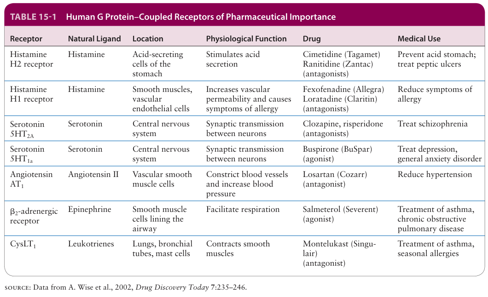
| Receptor | 受体 |
| Natural Ligand | 天然配体 |
| Location | 位置 |
| Physiological Function | 生理功能 |
| Drug | 药物 |
| Medical Use | 医学用途 |
| Histamine | 组胺 |
| H2 receptor | H2受体 |
| H1 receptor | H1受体 |
| Central nervous system | 中枢神经系统 |
| Angiotensin II | 血管紧张素II |
| AT1 | AT1受体 |
| Epinephrine | 肾上腺素 |
| β2-adrenergic receptor | β2肾上腺素能受体 |
| Leukotrienes | 白三烯 |
水平上已知的G蛋白偶联受体，就是β肾上腺素能受体，它们结合肾上腺素和去甲肾上腺素等激素（图15-13a）。在这些受体以及许多其他受体中，若干膜内嵌α螺旋的区段与细胞外环共同形成配体结合位点，该位点朝向外质面开放。图15-13b所示的拮抗剂氰基吲哚洛尔与β肾上腺素能受体的亲和力远高于大多数激动剂，由此形成的受体-配体复合物已被结晶并测定了结构。位于四个跨膜α螺旋和细胞外环E2中的15个氨基酸的侧链与配体形成非共价接触。
胰高血糖素是由胰岛α细胞分泌的一种29个氨基酸的肽类激素；正如我们将在本章后面看到的，它作用于肝脏，触发糖原分解以及葡萄糖向血液中的分泌。胰高血糖素受体属于与β肾上腺素能受体不同的GPCR亚家族；它虽然具有标准的七次跨膜α螺旋，但还有一个大的外质结构域，与第一个跨膜α螺旋的延伸部分相连。该外质结构域与胰高血糖素的C端紧密结合，使N端定位以结合到由若干跨膜螺旋的残基形成的口袋中，正如β肾上腺素能受体和其他GPCR那样（图15-13c）。构成
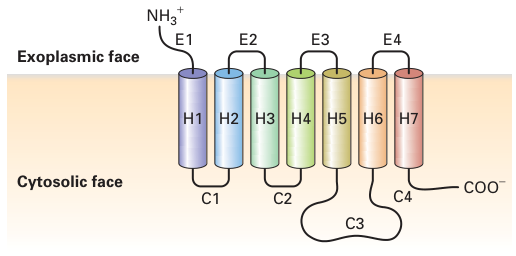
| Exoplasmic face | 外质面 |
| Cytosolic face | 胞质溶胶面 |
| NH3+ | 氨基端（NH3+） |
| COO- | 羧基端（COO-） |
| H1–H7 | 跨膜α螺旋H1–H7 |
| E1–E4 | 细胞外区段E1–E4 |
| C1–C4 | 胞质溶胶区段C1–C4 |
不同GPCR内部的氨基酸是多种多样的，这使不同的受体能结合非常不同的小分子，无论它们是亲水的（如肾上腺素和胰高血糖素）还是疏水的（如许多气味分子）。但在所有情况下，配体的结合都会引起受体的构象变化，使其能够激活异三聚体G蛋白的GTP结合Gα亚基。
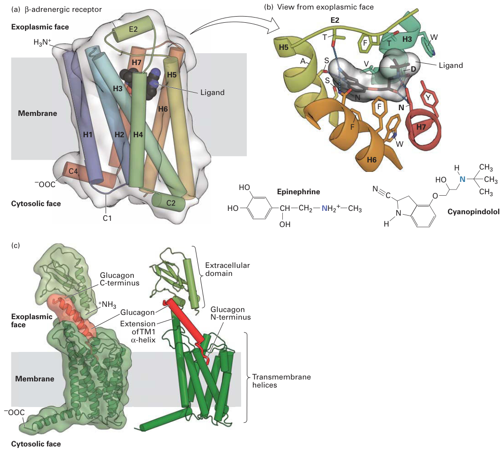
| β-adrenergic receptor | β肾上腺素能受体 |
| Ligand | 配体 |
| Exoplasmic face | 外质面 |
| Cytosolic face | 胞质溶胶面 |
| E2 | 细胞外环E2 |
| C1 | 胞质环C1 |
| C4 | 胞质环C4 |
| Epinephrine | 肾上腺素 |
| Cyanopindolol | 氰基吲哚洛尔 |
| Glucagon | 胰高血糖素 |
| Glucagon C-terminus | 胰高血糖素的C端 |
| Glucagon N-terminus | 胰高血糖素的N端 |
| Extracellular domain | 细胞外结构域 |
| Extension of TM1 α-helix | TM1 α螺旋的延伸部分 |
| Transmembrane helices | 跨膜螺旋 |
配体激活的G蛋白偶联受体催化GTP与GDP在异三聚体G蛋白α亚基上的交换
异三聚体G蛋白含有三个亚基，分别称为α、β和γ。只有Gα亚基结合GTP或GDP；Gα和Gγ亚基都通过共价连接的脂类与质膜相连。β和γ亚基总是结合在一起，通常称为Gβγ亚基。在静息状态下，当没有配体与受体结合时，Gα亚基结合着GDP并与Gβγ形成复合物。配体（如肾上腺素）或激动剂（如异丙肾上腺素）与G蛋白偶联受体的结合会改变其跨膜螺旋的构象，使受体能够结合完整的异三聚体G蛋白的Gα亚基（图15-14，步骤1和2）。这种
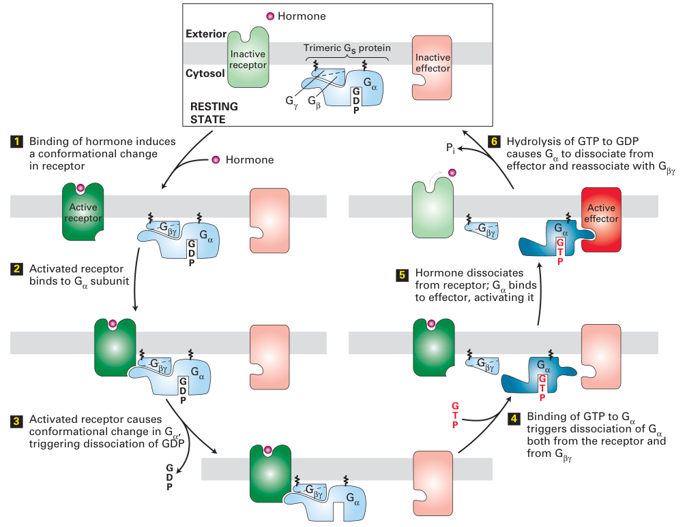
| Hormone | 激素 |
| Activated receptor | 活化受体 |
| Inactive effector | 非活性效应器 |
| Active effector | 活性效应器 |
| Exterior | 膜外 |
| Cytosol | 胞质溶胶 |
| Trimeric Gs protein | 三聚体Gs蛋白 |
| Gα | Gα |
| Gβ | Gβ |
| Gγ | Gγ |
| Gβγ | Gβγ |
| GDP | GDP |
| GTP | GTP |
| Pi | Pi |
| RESTING STATE | 静息状态 |
结合释放出所结合的GDP；因此，被激活的、结合配体的受体充当Gα亚基的鸟嘌呤核苷酸交换因子（GEF）（步骤3）。接着GTP迅速结合到Gα亚基中"空的"鸟嘌呤核苷酸位点，引起其开关区段构象的改变（见图15-5）。这些变化削弱了Gα与受体以及与Gβγ亚基的结合（步骤4）。在大多数情况下，仍锚定在质膜中的Gα∙GTP随后与一种效应蛋白相互作用并激活它（步骤5）。在某些情况下，Gα∙GTP抑制而非激活效应器。此外，取决于所涉及的细胞类型和G蛋白种类，从Gα亚基上释放出来的Gβγ亚基有时会通过与效应蛋白相互作用来转导信号。
活性的Gα∙GTP状态相对短暂，因为所结合的GTP被水解为GDP，这一过程由
Gα亚基固有的GTP酶活性催化，在数分钟内发生（图15-14，步骤6）。于是Gα亚基的构象切换回无活性的Gα∙GDP状态，阻断任何进一步的效应蛋白激活。由此产生的Gα∙GDP迅速与Gβγ重新结合，该复合物便准备好与一个被激活的受体相互作用，并重新开始整个过程。
GTP水解的速率有时会因Gα∙GTP复合物与效应器的结合而进一步增强；在这种情况下，效应器充当GTP酶激活蛋白（GAP）。这种反馈机制显著缩短效应器激活的持续时间，避免细胞过度反应。在许多情况下，第二种称为G蛋白信号调节因子（RGS）的GAP蛋白也会加速Gα亚基对GTP的水解，进一步缩短效应器保持激活的时间。因此，GPCR信号转导系统含有内在的反馈机制，确保效应蛋白在受体激活后只被激活几秒或几分钟；通过配体结合对受体的持续激活，连同随后对相应G蛋白的激活，是效应器长时间激活所必需的。
支持图15-14所示模型的早期证据来自对某些化合物的研究，这些化合物在结构上与GTP相似，因此能像GTP一样结合到Gα亚基上，但不能被其固有的GTP酶水解。在其中一些化合物中，连接GTP的β和γ磷酸基团的P–O–P磷酸二酯键被不可水解的P–CH2–P或P–NH–P键取代。在针对某一特定受体的激动剂存在下，将这种GTP类似物加入质膜制备物中，会使Gα
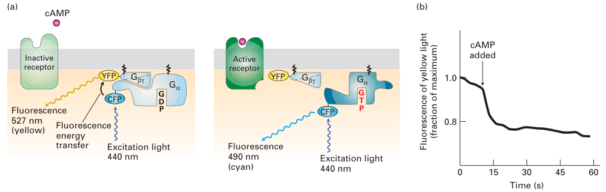
| CFP | CFP |
| YFP | YFP |
| cAMP | cAMP |
| cAMP added | 加入cAMP |
| Fluorescence of yellow light (fraction of maximum) | 黄色光荧光（最大值分数） |
| Time (s) | 时间（s） |
| Excitation light 440 nm | 激发光440 nm |
| Fluorescence 527 nm (yellow) | 荧光527 nm（黄色） |
| Fluorescence 490 nm (cyan) | 荧光490 nm（青色） |
| Fluorescence energy transfer | 荧光能量转移 |
| Inactive receptor | 非活性受体 |
| Active receptor | 活性受体 |
蛋白及其相关效应蛋白的激活远比使用GTP时持久。在该实验中，一旦不可水解的GTP类似物交换掉与Gα结合的GDP，它就会永久地结合在Gα上。由于Gα∙GTP类似物复合物在激活效应蛋白方面与正常的Gα∙GTP复合物一样有功能，效应器便保持永久激活。
GPCR介导的异三聚体G蛋白解离可以在活细胞中检测到。这些研究利用了Förster共振能量转移（FRET）现象，当两个荧光蛋白相互作用时，该现象会改变发射荧光的波长（见图4-24）。图15-15显示，这种实验方法如何证明了Gα∙Gβγ复合物在配体加入后几秒内即发生解离，为G蛋白循环模型提供了证据。这种通用的实验方法可用于追踪活细胞中其他蛋白质-蛋白质复合物的形成与解离。
许多年来，人们无法测定同一种GPCR在活性和非活性状态下的结构。如今已在β2肾上腺素能受体上实现了这一点（视紫红质也一样，将在15.4节讨论）。Robert Lefkowitz对β2肾上腺素能受体的最初克隆与表征，以及Brian Kobilka获得并描绘于图15-16中的三维结构，获得了2012年诺贝尔化学奖。β2肾上腺素能受体的七个膜内嵌α螺旋形成结合口袋，激动剂或拮抗剂可非共价地结合于其中（见图15-13）。激动剂与受体的结合诱导重大构象变化，其中跨膜螺旋5和6发生大幅移动
以及C3环结构的变化；这些变化共同形成一个表面，该表面现在能够结合Gα亚基的一个区段（图15-16b）。注意，当未被配体结合时，受体（图15-16a）没有与G蛋白互补的表面，因此不能与之结合。
对激活的β2肾上腺素能受体与其偶联G蛋白Gs复合物的X射线晶体学研究，也揭示了G蛋白各亚基彼此如何相互作用，并为GTP的结合如何导致Gα与Gβγ亚基解离提供了线索。与一个被激活的受体结合后，Gα亚基发生小的构象变化，使α5螺旋变长。这一变化产生一个大的表面，主要由Gαs蛋白的N端α螺旋区段αN和α5组成，它们主要结合被激活受体的跨膜螺旋5和6（见图15-16b）。同时，Gα的这种构象变化触发GDP的释放。注意，Gα∙GDP的一个大表面（包括αN）与Gβ亚基相互作用，但Gα∙GDP不直接接触Gγ。与GPCR的结合随后引起Gα亚基的开放、所结合GDP的排出以及由GTP的取代；紧接着是开关I和II内部的构象变化，这些变化破坏Gα与Gβγ之间的分子相互作用，导致Gα从Gβγ亚基上解离。
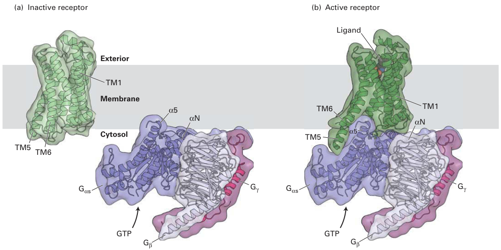
| Inactive receptor | 非活性受体 |
| Active receptor | 活性受体 |
| TM1 | TM1 |
| TM5 | TM5 |
| TM6 | TM6 |
| α5 | α5 |
| αN | αN |
| Exterior | 膜外 |
| Cytosol | 胞质溶胶 |
| Membrane | 膜 |
| Ligand | 配体 |
| Gαs | Gαs |
| Gβ | Gβ |
| Gγ | Gγ |
| GTP | GTP |
不同的G蛋白由不同的GPCR激活，并转而调控不同的效应蛋白
GPCR信号转导通路中的所有效应蛋白要么是膜结合离子通道，要么是催化图15-6所示一种或多种第二信使形成的膜结合酶。我们在15.4至15.6节中考察的GPCR信号传导的各种变奏之所以出现，是因为真核生物基因组编码了多种活性不同的G蛋白。人类有16个基因编码的21种不同的Gα亚基（其中若干发生可变剪接）、6种Gβ亚基和12种Gγ亚基。就目前所知，不同的Gβγ亚基在功能上可以互换，而不同的Gα亚基赋予各种G蛋白特异性。因此，我们可以用其α亚基的名称来指代整个三亚基G蛋白。
表15-2总结了具有不同Gα亚基的主要G蛋白类别的功能。为说明这些蛋白的多才多艺，我们将考察在哺乳动物不同类型细胞中发现的肾上腺素G蛋白偶联受体集合。肾上腺素这种激素在介导机体对压力的应答（也称为"战斗或逃跑"反应）中特别重要。正如我们将在15.5节详述的，在恐惧或剧烈运动时，组织对分解代谢葡萄糖和脂肪酸的需求可能增加，
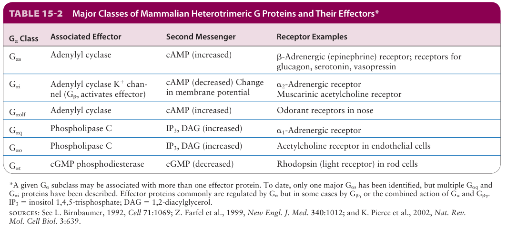
| Gα Class | Gα类别 |
| Associated Effector | 相关效应器 |
| Second Messenger | 第二信使 |
| Receptor Examples | 受体实例 |
| Gαs | Gαs |
| Gαi | Gαi |
| Gαq | Gαq |
| Gαt | Gαt |
| Adenylyl cyclase | 腺苷酸环化酶 |
| Phospholipase C | 磷脂酶C |
| cGMP phosphodiesterase | cGMP磷酸二酯酶 |
| IP3 | IP3 |
| DAG | DAG |
| Muscarinic acetylcholine receptor | 毒蕈碱型乙酰胆碱受体 |
| Rhodopsin (light receptor) in rod cells | 视杆细胞中的视紫红质（光受体） |
| β-Adrenergic (epinephrine) receptor | β肾上腺素能（肾上腺素）受体 |
以产生ATP，肾上腺素便发出信号，使肝细胞（肝脏）中的糖原迅速分解为葡萄糖，并使脂肪细胞中的三酰甘油迅速分解为脂肪酸；几秒之内，这些主要代谢燃料就被供应到血液中。在哺乳动物中，葡萄糖和脂肪酸的释放是由肾上腺素（或其衍生物去甲肾上腺素）与肝细胞和脂肪细胞表面的β2肾上腺素能受体结合所触发的。β肾上腺素能受体的两种亚型β1和β2都与一种刺激性G蛋白（Gs）偶联，其α亚基（Gαs）激活一种称为腺苷酸环化酶的膜结合效应酶。该酶一旦被激活，就催化第二信使cAMP的合成。
肾上腺素还有其他生理效应。例如，结合到心肌细胞上β1肾上腺素能受体的肾上腺素会提高收缩频率，从而增加组织的血液供应。还有另一种肾上腺素GPCR，即α1肾上腺素能受体，存在于肠道、皮肤和肾脏中血管内衬的平滑肌细胞上。肾上腺素与这些受体结合使动脉收缩，切断通往这些器官的血流。与α1肾上腺素能受体偶联的Gαq亚基激活另一种效应酶——磷脂酶C，它产生另外两种第二信使，即二酰甘油（DAG）和肌醇1,4,5-三磷酸（IP3）（见图15-6）。还有一种肾上腺素受体，即α2肾上腺素能受体，存在于许多机体细胞上并与Gαi亚基偶联，后者引起这些靶细胞中腺苷酸环化酶的抑制。肾上腺素的这些多样效应有助于协调全身的整合性应答，所有这些都指向一个共同目的：为主要运动肌提供能量，同时将能量从在执行身体应激应答中不那么关键的其他器官转移开。
有些细菌毒素含有一个亚基，它能穿透靶哺乳动物细胞的质膜，一旦进入胞质溶胶，就催化Gα蛋白的化学修饰，阻止所结合的GTP水解为GDP。例如，由霍乱弧菌（Vibrio cholerae）产生的毒素，
即引起霍乱的那种细菌，或某些大肠杆菌（E. coli）菌株，会进入肠道上皮细胞并催化这些细胞中Gαs蛋白的共价修饰。结果，Gαs保持活性状态，在没有激素刺激的情况下持续激活效应器腺苷酸环化酶。由此导致的细胞内cAMP过度升高使电解质和水流失到肠腔中，产生这些细菌感染特征性的水样腹泻。百日咳博德特菌（Bordetella pertussis）是一种常感染呼吸道细胞并引起百日咳的细菌，其产生的毒素催化Gαi的一种修饰，阻止所结合GDP的释放。结果，Gαi被锁定在非活性状态，减弱了对腺苷酸环化酶的抑制。由此导致的气道上皮细胞内cAMP升高促进了液体和电解质的流失以及黏液分泌。■
G蛋白偶联受体总计约有800个成员，代表人类基因组中最大的蛋白家族。据认为，编码这些蛋白的基因中约有一半编码感觉受体；其中大多数位于嗅觉系统并结合气味分子。许多所谓的孤儿GPCR——即没有已知同源配体的推定GPCR——其天然配体尚未被鉴定出来。这些孤儿受体中有许多很可能结合此前未被鉴定的信号分子，包括新的肽类激素。一种在鉴定孤儿GPCR配体方面被证明富有成效的方法，是在转染细胞中表达编码该受体的基因，并利用这些细胞作为报告系统来检测组织提取物中能激活该受体及其下游信号转导通路的物质。这种方法导致了两种新肽的发现，它们被称为食欲素A（orexin-A）和食欲素B（orexin-B）（源自希腊语orexis，意为"食欲"），被鉴定为与胰高血糖素受体同一家族的两个孤儿GPCR的配体。进一步的研究表明，食欲素基因仅在下丘脑中表达，下丘脑是脑中调节摄食的部分。将食欲素注射到动物的脑
室中，会使它们吃得更多，而且在禁食期间食欲素基因的表达显著增加。这两项发现都与食欲素在增加食欲中的作用相一致。引人注目的是，缺乏食欲素的小鼠患有发作性睡病，这种疾病在人类中表现为白天过度嗜睡（在小鼠中为夜间嗜睡）。此外，非常近期的报道提示，在大多数人类发作性睡病患者中，食欲素系统功能失调：在其脑脊液中检测不到食欲素肽（尽管没有证据表明其食欲素基因存在突变）。这些发现把食欲素神经肽及其受体与动物和人类的摄食行为和睡眠都牢固地联系起来。
- G蛋白偶联受体（GPCR）是一个庞大而多样的家族，具有共同的结构：七个跨膜α螺旋和一个对特定配体特异的内部配体结合口袋（见图15-12和图15-13）。
- GPCR与异三聚体G蛋白偶联，后者含有三个亚基，分别称为α、β和γ。Gα亚基是一种GTP酶开关蛋白，在结合GTP的活性（"开"）状态与结合GDP的非活性（"关"）状态之间交替。处于"开"形式的Gα从β和γ亚基上分离，并激活一种膜结合效应器。β和γ亚基保持结合在一起，也能转导信号（见图15-14）。
- 配体的结合引起GPCR某些跨膜螺旋和细胞内环的构象变化，使其能够结合其偶联的Gα亚基并充当该亚基的鸟嘌呤核苷酸交换因子（GEF），催化GDP解离并允许GTP结合。Gα中开关区由此发生的构象变化，使它从Gβγ亚基和受体上解离下来，并与一种效应蛋白相互作用（见图15-14）。
- FRET实验证明了活细胞中偶联的Gα与Gβγ亚基发生受体介导的解离（见图15-15）。
- 由异三聚体G蛋白激活（或失活）的效应蛋白，要么是形成第二信使的酶（如腺苷酸环化酶、磷脂酶C），要么是离子通道（见表15-2）。在每种情况下，都是Gα亚基决定G蛋白的功能并赋予其特异性。
- 根据结合配体的受体亚型不同，GPCR可以产生一系列细胞效应。例如，介导"战斗或逃跑"反应的激素肾上腺素，可与多种细胞类型中的多种GPCR亚型结合，产生不同的生理效应。
- 鉴定孤儿GPCR的努力导致了食欲素的发现，这是在动物和人类中调节摄食行为与睡眠的激素。
15.4 调控离子通道的G蛋白偶联受体
细胞对信号的最简单应答之一，就是开启或关闭那些对神经冲动的传导至关重要的离子通道。神经冲动对于感光和气味等环境刺激的感知，对于在大脑与身体之间双向传递信息，以及对于激发肌肉运动，都是必不可少的。在神经冲动的传导过程中，离子通道的开启与关闭会引起膜电位的变化。许多神经递质受体都是配体门控离子通道，它们在配体结合后开放。这类受体包括某些类型的谷氨酸受体、5-羟色胺受体和乙酰胆碱受体，其中就有存在于神经-肌肉突触处的乙酰胆碱受体。作为神经递质受体发挥作用的配体门控离子通道将在第22章讨论。
然而，许多神经递质受体是G蛋白偶联受体，它们的效应蛋白是Na+通道或K+通道。神经递质与这些受体结合后，会使与之相连的离子通道开放或关闭，从而导致膜电位发生变化。还有一些神经递质受体，以及鼻腔中的气味受体和眼中的光感受器，都是通过第二信使的作用间接调节离子通道活性的G蛋白偶联受体。本节我们将讨论两种G蛋白偶联受体，它们分别体现了调控离子通道的直接机制和间接机制：心脏的毒蕈碱型乙酰胆碱受体，以及眼中受光激活的视紫红质蛋白。
心肌中的乙酰胆碱受体激活一种开启K+通道的G蛋白
毒蕈碱型乙酰胆碱受体是心肌中存在的一类GPCR。这些受体被激活后，会减慢心肌收缩的速率。由于乙酰胆碱的类似物毒蕈碱也能激活这些受体，它们被称为"毒蕈碱型"。这类乙酰胆碱受体与一种Gαi蛋白偶联，配体结合会导致质膜中与之相连的K+通道（即效应蛋白）开放（图15-17）。随后K+从胞质溶胶外流，使质膜两侧通常为内负的电位幅度增大，这种状态可持续数秒。膜的这一状态称为超极化状态，它会降低肌肉收缩的频率。把乙酰胆碱加到离体的心肌细胞上，并用插入细胞内的微电极测量膜电位，就可以通过实验显示这一效应（见图11-19）。
如图15-17所示，被激活的毒蕈碱型乙酰胆碱受体发出的信号，是由释放出来的Gβγ亚基而不是Gαi∙GTP转导到效应通道蛋白的。Gβγ直接激活K+通道这一点，已由膜片钳实验所证明，这种实验能够测量通过一小片膜上一个或少数几个离子通道的离子流
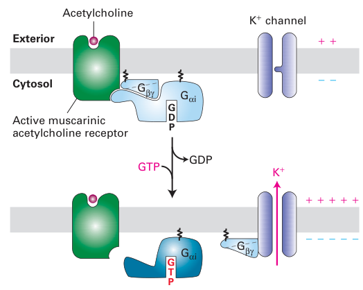
| K+ channel | K+通道 |
| Acetylcholine | 乙酰胆碱 |
| Active muscarinic acetylcholine receptor | 活性毒蕈碱型乙酰胆碱受体 |
| Gαi | Gαi |
| Gβγ | Gβγ |
| GDP | GDP |
| GTP | GTP |
| Exterior | 外侧 |
| Cytosol | 胞质溶胶 |
（见图11-22）。当把纯化的Gβγ蛋白（而不是Gαi∙GTP）加到一小片心肌质膜的胞质面时，即使没有乙酰胆碱或其他神经递质，K+通道也立即开放——这清楚地表明，负责开启效应K+通道的正是Gβγ蛋白。
光激活眼中视杆细胞里的视紫红质
人的视网膜含有两类光感受器细胞——视杆细胞和视锥细胞，它们是视觉刺激的主要接受者。视锥细胞参与色觉，而视杆细胞则可被月光之类一定波长范围内的弱光所刺激。光感受器细胞与一层又一层的中间神经元形成突触（即向它们发送信号），这些中间神经元接受不同组合的光感受器细胞的支配。所有这些信号都经过处理，并通过视觉丘脑中继传送到大脑中称为视皮层的部位，在那里得到解读。
视杆细胞借助一种称为视紫红质的感光GPCR来感知光。视紫红质由视蛋白与一种称为视黄醛的吸光色素共价连接而成，视蛋白具有GPCR通常的七次跨膜区段结构。视紫红质只存在于视杆细胞中，它定位于
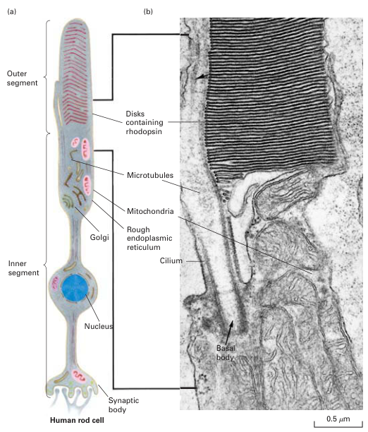
| Human rod cell | 人视杆细胞 |
| Outer segment | 外段 |
| Inner segment | 内段 |
| Disks containing rhodopsin | 含视紫红质的膜盘 |
| Microtubules | 微管 |
| Mitochondria | 线粒体 |
| Rough endoplasmic reticulum | 粗面内质网 |
| Golgi | 高尔基体 |
| Nucleus | 细胞核 |
| Cilium | 纤毛 |
| Basal body | 基体 |
| Synaptic body | 突触体 |
构成每个这类杆状细胞外段的约一千个扁平膜盘上（图15-18）。一个人类视杆细胞约含4×10⁷个视紫红质分子。与视紫红质偶联的异三聚体G蛋白称为转导蛋白（Gt），它含有一个称为Gαt的Gα亚基；与视紫红质一样，Gαt也只存在于视杆细胞中。
视紫红质（R）与其他GPCR不同之处在于，激活受体的并不是配体的结合。相反，与它结合的视黄醛吸收一个光子才是激活信号。吸收光子后，视紫红质的视黄醛部分立即从顺式异构体（称为11-顺式视黄醛）转变为全反式异构体，从而使视蛋白发生构象变化（图15-19）。这种变化等同于其他G蛋白偶联受体在配体结合时发生的激活性构象变化；这一构象变化使视紫红质能够结合其偶联G蛋白——转导蛋白——的Gαt亚基，从而触发Gαt亚基上GTP与GDP的交换。与此同时，转导蛋白也解离成Gαt亚基和Gβγ亚基。所形成的活化视紫红质称为R*，它不稳定，因为与视黄醛之间的共价连接会自发断裂。由于不含视黄醛的视蛋白不能结合转导蛋白，
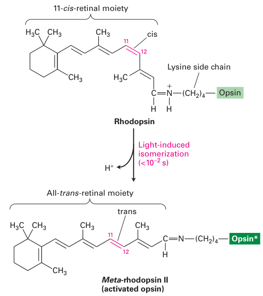
| Rhodopsin | 视紫红质 |
| Light-induced isomerization | 光诱导异构化 |
| Meta-rhodopsin II | 变视紫红质II |
| Activated opsin | 活化视蛋白 |
| Opsin | 视蛋白 |
| Opsin* | 视蛋白* |
| Lysine side chain | 赖氨酸侧链 |
| 11-cis-retinal moiety | 11-顺式视黄醛部分 |
| All-trans-retinal moiety | 全反式视黄醛部分 |
视觉信号的启动就在这一步终止。在黑暗中，游离的全反式视黄醛经过一系列涉及视杆细胞和相邻视网膜色素上皮细胞中酶的步骤，重新转变为11-顺式视黄醛。生成的11-顺式视黄醛随后被转运到视杆细胞中，在那里重新结合视蛋白，形成视紫红质，从而完成视紫红质的视觉循环。
光对视紫红质的激活导致cGMP门控阳离子通道关闭
在黑暗中，视杆细胞的膜电位约为−30 mV，比神经元和其他电活性细胞典型的静息电位（−60至−90 mV）要正得多（即负值小得多）（见第11章）。膜的这种状态称为去极化状态，它使视杆细胞在黑暗中持续分泌神经递质，因此与它们形成突触的神经元也就一直处于
被刺激状态。静息视杆细胞质膜之所以处于去极化状态，是因为存在大量开放的非选择性离子通道，它们允许Na+和Ca2+进入细胞；回忆第11章的内容可知，Na+和Ca2+等阳离子（带正电的离子）从细胞外移动到细胞内，会减小内负膜电位的幅度，即使膜去极化。这些非选择性阳离子通道在第二信使环鸟苷酸（cGMP）结合后开放（受其"门控"）（见图15-6）。视杆细胞外段含有浓度异常高（约0.07 mM）的cGMP，它由GTP在鸟苷酸环化酶催化的反应中不断生成，因此cGMP门控通道大多保持在开放状态。
视紫红质吸收光，导致非选择性阳离子通道关闭，使膜电位内侧变得更负。与前面讨论的毒蕈碱型乙酰胆碱受体所偶联的G蛋白不同，由视紫红质激活的G蛋白并不直接作用于离子通道。视杆细胞质膜中阳离子通道的关闭，是由cGMP水平显著下降引起的（图15-20）。视紫红质吸收光会迅速激活一种cGMP磷酸二酯酶（PDE），它把cGMP水解为5′-GMP；这种光诱导的cGMP水平下降导致通道关闭。这又引起膜超极化，并减少神经递质的释放。视紫红质吸收的光子越多，水解的cGMP就越多，关闭的通道就越多，从膜外跨膜进入的Na+和Ca2+离子就越少，膜电位就变得越负，释放的神经递质也就越少。神经递质释放的减少经一系列神经元传到大脑，在那里被感知为光。
如图15-20所示，Gαt∙GTP及其效应器PDE都通过脂质锚定在视杆细胞膜盘的胞质面。视紫红质激活后生成的Gαt∙GTP复合物能够沿膜表面侧向移动，并与PDE的两个抑制性γ亚基结合（见图15-20；注意化学计量比为1:1，即一个Gαt∙GTP结合一个γ亚基）。Gαt∙GTP与γ亚基的结合释放出具有催化活性的αβ二聚体，后者随后把cGMP转变为GMP。这是一个清楚的例子，说明信号诱导地去除某个抑制性亚基可以迅速激活一种酶——这是信号通路中常见的机制。
cGMP在视杆细胞活动中所起作用的直接证据，来自使用分离的视杆细胞外段质膜小片所做的膜片钳研究，这种膜片含有丰富的cGMP门控阳离子通道。当把cGMP加到这些小片的胞质面时，开放的阳离子通道数目迅速增加；cGMP直接结合到通道蛋白上的某个位点，使通道保持开放。与第11章讨论的K+通道一样，cGMP门控通道蛋白含有四个亚基（见图11-20）。在这里，每个亚基都能
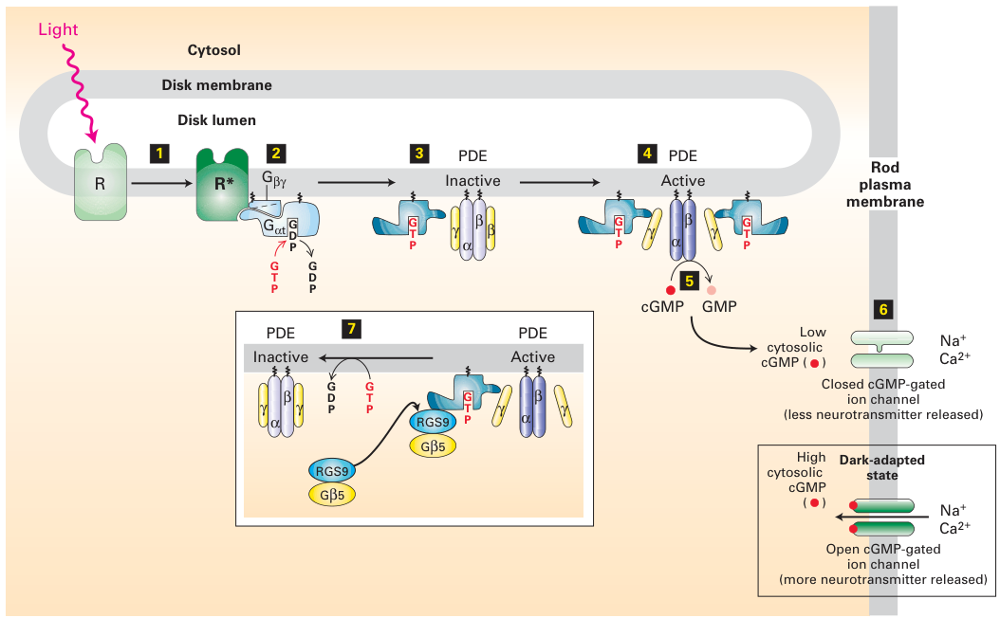
| Dark-adapted state | 暗适应状态 |
| Disk lumen | 膜盘腔 |
| Disk membrane | 膜盘膜 |
| Cytosol | 胞质溶胶 |
| Rod plasma membrane | 视杆细胞质膜 |
| Na+ | Na+ |
| Ca2+ | Ca2+ |
| cGMP | cGMP |
| GTP | GTP |
| Gαt∙GTP | Gαt∙GTP |
| Open cGMP-gated ion channel | 开放的cGMP门控离子通道 |
| Closed cGMP-gated ion channel | 关闭的cGMP门控离子通道 |
| Inactive PDE | 无活性PDE |
| Active PDE | 活性PDE |
| RGS9-Gβ5 | RGS9-Gβ5 |
结合一个cGMP分子。每个通道必须结合三到四个cGMP分子才能开放；这种协同的别构相互作用使通道的开放对cGMP水平的微小变化非常敏感。
Gαt具有内在的GTP酶活性，能把结合的GTP水解为GDP，产生不能再与PDE的γ亚基结合的无活性Gαt∙GDP复合物。视杆细胞中Gαt的内在GTP酶活性受到一种特异性GTP酶激活蛋白（GAP）的加速。在哺乳动物中，Gαt通常只在不到一秒的短暂时间内保持含GTP的活性状态。GTP迅速水解为GDP以及随后Gαt的失活，会触发结合的PDE γ亚基释放，这些γ亚基随即与PDE的α亚基和β亚基重新结合，再生出无活性的PDE αβγ2四聚体。因此PDE迅速失去其活性，cGMP浓度开始回升到光诱导前的水平。通过这一过程，眼睛能够对运动物体引起的或视线方向改变时出现的光照模式变化迅速作出反应。
信号放大使视紫红质信号转导通路极为灵敏
值得注意的是，静息视杆细胞吸收一个光子就能产生可测量的应答，表现为膜电位约1 mV的微小超极化，在两栖类中可持续一两秒。人类用其数百到数千个视杆细胞，能够检测到仅由五个光子组成的一次闪光；这种对单光子吸收的应答与夜视觉密切相关。光检测系统之所以非常灵敏，是因为信号转导通路把信号大大放大了。在其保持活性的时间内，视杆细胞膜盘上的每个视紫红质分子可以激活约500个Gαt分子，其中每两个又激活一个磷酸二酯酶分子。每个PDE分子在其保持活性的不到一秒的时间内，可水解数百个cGMP分子。因此，吸收一个光子——产生一个活化的
视紫红质分子——就能引发质膜上数千个阳离子通道（约占开放通道的5%）关闭，并使细胞的膜电位发生可测量的变化。
视紫红质信号通路的快速终止对视觉的时间分辨必不可少
与所有G蛋白偶联信号通路一样，视紫红质信号通路的及时终止要求所有被激活的中间产物迅速失活，使系统恢复到基础状态，随时可以再次传导信号。因此，三种蛋白质中间产物——活化视紫红质（R*）、Gαt∙GTP和活化PDE——都必须失活，而胞质中的cGMP浓度必须由鸟苷酸环化酶恢复到其黑暗水平，该酶催化由GMP生成cGMP的反应。哺乳动物视杆细胞在应答一个光子时，视紫红质活化与失活的整个过程只需约50毫秒；这使眼睛能够对变化的光照条件迅速作出反应。多种机制共同作用，才使这一极为迅速的反应成为可能。
使Gαt∙GTP失活的GTP酶激活蛋白（GAP） 首先，由PDE的抑制性γ亚基与Gαt∙GTP组成的复合物招募另外两种蛋白RGS9和Gβ5，它们共同作为GAP，提高结合的GTP水解为GDP的速率（第7步，图15-20）。GTP的水解又导致PDE γ亚基释放，后者与PDE的α亚基和β亚基重新结合，从而终止PDE的活化（第8步）。对
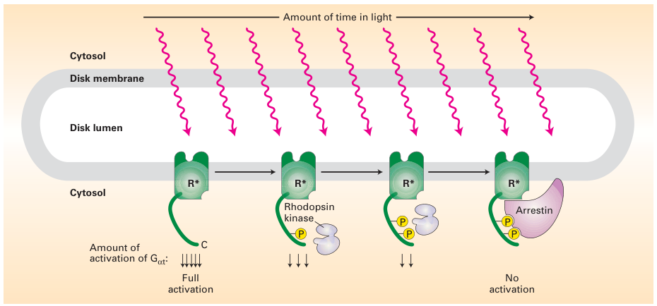
| Amount of time in light | 受光时间 |
| Amount of activation of Gαt | Gαt的活化量 |
| No activation | 无活化 |
| Full activation | 完全活化 |
| Disk lumen | 膜盘腔 |
| Disk membrane | 膜盘膜 |
| Cytosol | 胞质溶胶 |
| Rhodopsin kinase | 视紫红质激酶 |
| R* | 活化视紫红质（R*） |
| Arrestin | 抑制蛋白 |
编码RGS9的基因被敲除的小鼠所做的实验表明，这种蛋白对于在体内使信号级联正常失活是必不可少的。在单个小鼠视杆细胞中，从一次闪光中恢复所需的时间从正常小鼠的0.2秒增加到RGS9缺陷小鼠的约9秒。这意味着增加了45倍，证明了RGS9作为Gαt∙GTP-GAP复合物组分之一的重要性。
激活鸟苷酸环化酶的Ca2+感应蛋白 其次，光触发的cGMP门控阳离子通道关闭，引起视杆细胞内胞质溶胶Ca2+浓度下降。这是因为Ca2+被一种不受cGMP水平影响的反向转运蛋白（Na+/Ca2+-K+交换器）持续转运出细胞。细胞内Ca2+浓度的下降由一类称为鸟苷酸环化酶激活蛋白的Ca2+结合蛋白所感知，这些蛋白与鸟苷酸环化酶结合并刺激其活性，从而提高cGMP水平，使cGMP门控离子通道重新开放。这是负反馈的又一个例子：下游的第二信使——在这里是低胞质溶胶Ca2+——抑制进一步的信号传导，从而防止细胞反应过度。
视紫红质的磷酸化与抑制蛋白的结合 第三，抑制并帮助终止视觉应答的一个主要过程，涉及视紫红质处于活化形式（R*）而非失活形式（即黑暗形式，R）时发生的磷酸化。视紫红质激酶（图15-21）是催化这一磷酸化反应的酶，属于GPCR激酶类。每个视蛋白分子在其朝向胞质溶胶的C端C4区段上有两个主要的
丝氨酸磷酸化位点；被视紫红质激酶磷酸化的位点越多，R*激活Gαt从而诱导cGMP门控阳离子通道关闭的能力就越弱。
抑制蛋白只有在两三个丝氨酸被磷酸化时才与视紫红质紧密结合，它极大地加快了失活过程。与磷酸化R*结合的抑制蛋白完全阻止了它与Gαt的相互作用，阻断活性Gαt∙GTP复合物的形成，并阻止PDE的进一步活化。视紫红质磷酸化以及被抑制蛋白失活的整个过程完成得非常快，在50毫秒之内。与此同时，与视紫红质相连的磷酸基被一种特异性视紫红质磷酸酶不断去除；这种去除导致抑制蛋白解离，视紫红质恢复到其原有的感光状态。
视杆细胞通过抑制蛋白与转导蛋白的胞内转运适应不同的环境光水平
视锥细胞对低强度光不敏感，而视杆细胞的功能在高强度光下则会饱和。当我们从明亮阳光下走进光线昏暗的房间时，起初看不清周围的物体。原因在于我们的视杆细胞需要一段时间才能对房间里微弱的光线变得敏感；渐渐地，我们就能看见并分辨物体了。在这段时间里，我们的视杆细胞把对光的敏感度"调高"。相反，当我们迅速从昏暗的房间走到明亮的阳光下时，情况刚好相反：我们的视杆细胞把对光的敏感度"调低"。由于这一称为视觉适应的过程，视杆细胞能够在从昏暗房间到明亮阳光、跨越100,000倍的环境光水平范围内感知光的对比。之所以能有如此宽的敏感度范围，是因为大脑最终感知并用来形成视觉图像的，是视野中光水平的差异，而不是吸收光的绝对量。正如我们下面将会看到的，正是信号通路中两种关键蛋白——转导蛋白和抑制蛋白——的亚细胞转运，造就了视杆细胞非凡的敏感度范围。
在暗适应的视杆细胞中，80%–90%的Gαt和Gβγ转导蛋白亚基位于外段，而定位于该处的抑制蛋白分子不到10%（图15-22）。这种空间分布使下游效应器PDE能够被最大限度地激活，从而对光的微小变化具有最大的敏感度。但是，暴露于白天中等强度的光下10分钟，就会使这些蛋白发生完全的重新分布：超过80%的Gαt和Gβγ亚基从外段移出，进入细胞的其他部分，而超过80%的抑制蛋白则移入外段。
这些蛋白在细胞内移动的机制尚不清楚，但可能涉及附着于微管的马达蛋白，它们把蛋白质及其他货物运进运出不同的亚细胞区域（见第18章）。在强光下，转导蛋白（连同其
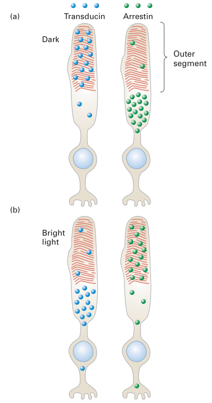
| Transducin | 转导蛋白 |
| Arrestin | 抑制蛋白 |
| Outer segment | 外段 |
| Dark | 黑暗 |
| Bright light | 强光 |
Gαt和Gβγ亚基）在外段中水平的降低，意味着Gαt根本无法与活化的视紫红质结合。结果，被激活的PDE减少。与此同时，外段中抑制蛋白水平的升高意味着，任何存在的活化视紫红质都将迅速失活。转导蛋白水平的下降与抑制蛋白水平的升高共同大大削弱了光水平的小幅升高激活下游效应器PDE的能力；因此，只有光水平的大幅变化才会被视杆细胞感知。当环境光水平降低时，这些蛋白的移动方向反转。
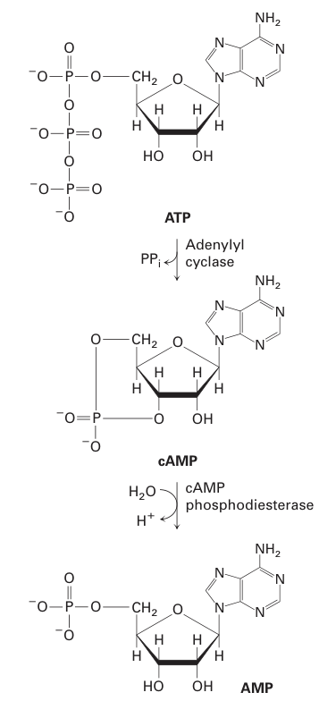
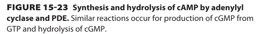
| ATP | ATP |
| cAMP | 环腺苷酸（cAMP） |
| Adenylyl cyclase | 腺苷酸环化酶 |
| cAMP phosphodiesterase | cAMP磷酸二酯酶 |
| Pi | Pi |
- 心脏的毒蕈碱型乙酰胆碱受体是一种GPCR，其效应蛋白是K+通道。受体活化释放出Gβγ亚基，后者结合并开启K+通道（见图15-17）。由此引起的细胞膜超极化会减慢心肌收缩的速率。
- 视紫红质是视杆细胞中的感光GPCR，由视蛋白与11-顺式视黄醛连接而成。11-顺式视黄醛部分的光诱导异构化产生活化视蛋白，后者通过催化游离GTP置换Gαt亚基上结合的GDP，激活与之偶联的异三聚体G蛋白——转导蛋白（Gt）（见图15-19和图15-20）。
- 视紫红质通路中的效应蛋白是PDE，它由Gαt∙GTP介导释放抑制性亚基而被激活。该酶使cGMP水平降低，导致cGMP门控Na+/Ca2+通道关闭、膜超极化以及神经递质释放减少（见图15-20）。
- 有几种机制共同终止视觉信号传导：GAP蛋白使Gαt∙GTP失活，Ca2+感应蛋白激活鸟苷酸环化酶，而视紫红质的磷酸化及抑制蛋白的结合则抑制转导蛋白的活化。
- 对视杆细胞外段中转导蛋白与抑制蛋白进出的调节，介导了对大范围环境光强的适应；这两者的运动共同调节了光强小幅升高激活下游效应器PDE的能力，从而调节视杆细胞在不同环境光强下的敏感性。
15.5 激活或抑制腺苷酸环化酶的G蛋白偶联受体
以腺苷酸环化酶为效应蛋白、以cAMP为第二信使的GPCR信号转导通路存在于大多数哺乳动物细胞中，在这些细胞里它们调控着多种多样的细胞功能，从脂肪与糖的代谢、激素的合成与分泌，到肌肉收缩。这些通路遵循图15-14所示的GPCR一般机制：配体与受体结合后激活一种偶联的异三聚体G蛋白，称为Gαs，后者激活一种效应蛋白——在这里就是腺苷酸环化酶，它利用ATP合成可扩散的第二信使cAMP（图15-23）。cAMP随后激活一种cAMP依赖性蛋白激酶，由它磷酸化特定的靶蛋白。在哺乳动物中，有30多种不同的GPCR可激活Gαs和腺苷酸环化酶；大多数细胞类型都表达一种或多种这样的GPCR。正如经典实验15-1所详述的，对腺苷酸环化酶激活机制的早期研究，导致了受体信号传导中第一种GTP结合蛋白作用的发现。
为了探究这条GPCR/cAMP通路，我们聚焦于最早被发现的一条此类通路：激素刺激下由糖原（一种葡萄糖的储存聚合物）生成1-磷酸葡萄糖（图15-24）。糖原的分解（糖原分解）发生在肌细胞和肝细胞中，是对肾上腺素和胰高血糖素等激素的应答，它是把葡萄糖提供给需要能量的细胞的一条主要途径。这个例子展示了GPCR的激活如何刺激或抑制多种胞内酶，使它们协调一致地完成一项具有重要生理意义的工作：糖原代谢。
腺苷酸环化酶被不同的受体-配体复合物激活和抑制
在机体对葡萄糖需求高的条件下，例如血糖低时，胰岛的α细胞释放胰高血糖素；在突然遇到危险时，肾上腺释放肾上腺素。胰高血糖素和肾上腺素都向肝细胞和肌细胞发出信号，使其解聚糖原，释放出单个葡萄糖分子。在肝脏中，胰高血糖素
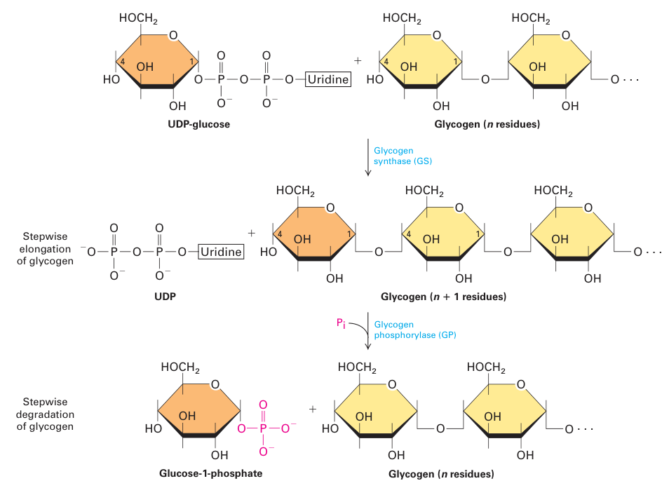
| UDP-glucose | UDP-葡萄糖 |
| Uridine | 尿苷 |
| UDP | UDP |
| Glycogen | 糖原 |
| Glycogen synthase (GS) | 糖原合酶（GS） |
| Glycogen phosphorylase (GP) | 糖原磷酸化酶（GP） |
| Glucose-1-phosphate | 1-磷酸葡萄糖 |
| Pi | 无机磷酸（Pi） |
| Stepwise elongation of glycogen | 糖原的逐步延长 |
| Stepwise degradation of glycogen | 糖原的逐步降解 |
和肾上腺素结合到不同的G蛋白偶联受体上，但两种受体都与同一个刺激性Gαs蛋白相互作用并将其激活，后者再激活腺苷酸环化酶（图15-25）。因此两种激素诱导出相同的代谢应答。腺苷酸环化酶的激活，以及由此引起的cAMP水平升高，与每种激素各自结合其受体所产生的Gαs∙GTP总浓度成正比。
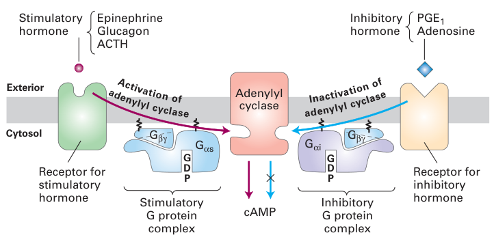
| Exterior | 细胞外 |
| Cytosol | 胞质溶胶 |
| Adenylyl cyclase | 腺苷酸环化酶 |
| Stimulatory G protein | 刺激性G蛋白 |
| Inhibitory G protein | 抑制性G蛋白 |
| Stimulatory hormone | 刺激性激素 |
| Inhibitory hormone | 抑制性激素 |
| Receptor for stimulatory hormone | 刺激性激素受体 |
| Receptor for inhibitory hormone | 抑制性激素受体 |
| Epinephrine | 肾上腺素 |
| Glucagon | 胰高血糖素 |
| ACTH | ACTH |
| PGE1 | 前列腺素E1（PGE1） |
| Adenosine | 腺苷 |
| Gαs | Gαs |
| Gαi | Gαi |
| Gβγ | Gβγ |
| cAMP | cAMP |
腺苷酸环化酶活性的正向（激活）与负向（抑制）调控发生在许多细胞类型中，从而对cAMP水平、进而对下游细胞应答提供精细调控（见图15-25）。例如在脂肪细胞中，甘油三酯（第49页）分解为脂肪酸和甘油（脂解），供其他身体细胞作为燃料使用，这一过程被肾上腺素、胰高血糖素或促肾上腺皮质激素的结合所刺激
（ACTH）结合到不同的GPCR上，它们都激活Gαs，从而激活腺苷酸环化酶。相反，另外两种激素——前列腺素E1（PGE1）和腺苷——与各自G蛋白偶联受体的结合则抑制腺苷酸环化酶。前列腺素受体和腺苷受体激活一种抑制性Gi蛋白，它含有不同的α亚基（Gαi）。活化的Gαi∙GTP复合物与Gβγ解离后，结合并抑制（而不是刺激）腺苷酸环化酶，导致cAMP水平下降。
结构研究确立了Gαs∙GTP如何结合并激活腺苷酸环化酶
X射线晶体学分析已经确定了Gαs∙GTP中与腺苷酸环化酶相互作用的区域。这种酶是一个多次跨膜的跨膜蛋白，带有两个大的胞质溶胶结构域，每个结构域都是一个催化结构域，可以结合ATP并将其转化为cAMP（图15-26a）。由于这类跨膜蛋白极难结晶，科学家从腺苷酸环化酶的不同催化结构域制备了两个可溶性蛋白片段，它们在重折叠并有催化活性的腺苷酸环化酶中彼此紧密结合。当让这些片段在同时存在Gαs∙GTP和佛司可林（一种能结合并激活腺苷酸环化酶的植物化学物质）的条件下结合时，它们就能稳定在具有活性的催化构象上。
由此得到的水溶性复合物（带有Gαs∙GTP和佛司可林的腺苷酸环化酶催化结构域）具有与完整的全长腺苷酸环化酶相似的合成cAMP的酶活性。在该复合物中，Gαs∙GTP的两个区域——开关II螺旋和α3–β5环——与腺苷酸环化酶结构域接触（图15-26b）。据认为正是这些接触造成了Gαs∙GTP对该酶的激活。请回忆，开关II是Gα亚基中在GTP结合状态与GDP结合状态下构象不同的片段之一（见图15-5）。Gαs那种有利于其与Gβγ解离的GTP诱导构象，恰恰就是Gαs与腺苷酸环化酶结合所必需的构象。
cAMP通过释放抑制性亚基激活蛋白激酶A
由腺苷酸环化酶合成的第二信使cAMP，在多细胞动物的不同细胞类型中转导多种多样的生理信号。cAMP几乎所有的多样化效应都是通过激活蛋白激酶A（PKA）介导的，PKA也称cAMP依赖性蛋白激酶，它磷酸化在不同细胞类型中表达的多种胞内靶蛋白。无活性的PKA是一个四聚体，由两个调节（R）亚基和两个催化（C）亚基组成（图15-27a）。每个R亚基都含有一个假底物结构域，其序列与肽底物相似，能结合到催化结构域的活性位点但不被磷酸化；因此假底物结构域抑制了催化
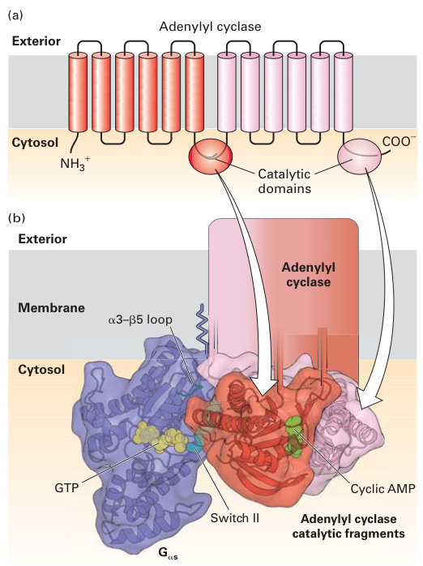
| Exterior | 细胞外 |
| Cytosol | 胞质溶胶 |
| Membrane | 膜 |
| Adenylyl cyclase | 腺苷酸环化酶 |
| Catalytic domains | 催化结构域 |
| Adenylyl cyclase catalytic fragments | 腺苷酸环化酶催化片段 |
| α3–β5 loop | α3–β5环 |
| Switch II | 开关II |
| GTP | GTP |
| Gαs | Gαs |
| Cyclic AMP | 环腺苷酸（cAMP） |
亚基的活性。无活性的PKA通过与cAMP结合而被开启。每个R亚基都有两个不同的cAMP结合位点，称为CNB-A和CNB-B（图15-27b）。cAMP与这两个位点的结合引起R亚基（包括其假底物结构域）发生构象变化，使其不再能结合并抑制催化结构域，于是释放出催化结构域，立即激活其激酶活性（图15-27c）。
PKA的R亚基与cAMP的结合是协同性的；也就是说，第一个cAMP分子与CNB-B的结合降低了第二个cAMP与CNB-A结合的Kd。因此，胞质溶胶cAMP水平的微小变化
就能引起解离的C亚基数量、进而细胞激酶活性成比例的大幅变化。通过信号触发的抑制物解离来快速激活酶，是许多信号通路的共同特征。
糖原代谢受激素诱导的PKA激活调控
与所有生物聚合物一样，糖原由一组酶合成、由另一组酶降解（见图15-24）。糖原的降解（即糖原分解）通过磷酸解反应从聚合物的一端逐步移除葡萄糖残基，该反应由糖原磷酸化酶（GP）催化，生成1-磷酸葡萄糖。
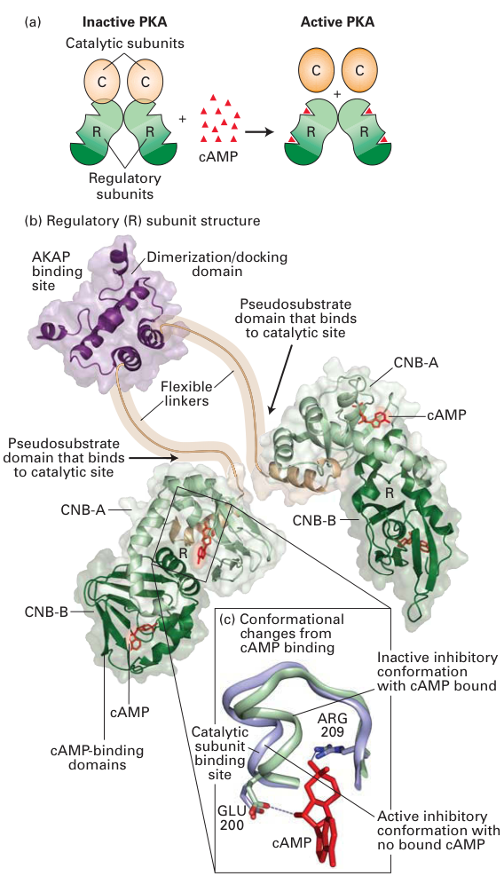
| Regulatory (R) subunit structure | 调节（R）亚基结构 |
| Pseudosubstrate domain | 假底物结构域 |
| Catalytic subunit binding site | 催化亚基结合位点 |
| Flexible linkers | 柔性连接区 |
| Dimerization/docking domain | 二聚化/对接结构域 |
| AKAP binding site | AKAP结合位点 |
| cAMP-binding domains | cAMP结合结构域 |
| CNB-A | CNB-A |
| CNB-B | CNB-B |
| GLU 200 | Glu200 |
| ARG 209 | Arg209 |
| Inactive PKA | 无活性PKA |
| Active PKA | 有活性PKA |
| Active inhibitory conformation | 活性抑制构象 |
| Inactive inhibitory conformation | 无活性抑制构象 |
| Conformational changes from cAMP binding | cAMP结合引起的构象变化 |
在肌细胞和肝细胞中，由糖原产生的1-磷酸葡萄糖都被一种酶转化为6-磷酸葡萄糖。在肌细胞中，该代谢物进入糖酵解途径，被代谢以生成ATP，用于驱动肌肉收缩（见第12章和第17章）。与肌细胞不同，肝细胞含有一种磷酸酶，可将6-磷酸葡萄糖水解为葡萄糖，后者主要通过质膜上的葡萄糖转运蛋白（GLUT2）从这些细胞输出（见第11章）。因此，肝脏中的糖原储备主要被分解为葡萄糖，这些葡萄糖立即释放到血液中并被运送到其他组织，尤其是肌肉和脑，为它们提供营养。两种细胞中的糖原分解都是由血液肾上腺素升高诱导的，是"战斗或逃跑"反应的一部分。
活化的PKA通过两种方式促进糖原转化为1-磷酸葡萄糖：抑制糖原合成，以及刺激糖原降解（图15-28a）。PKA直接磷酸化并由此失活糖原合酶（GS），即合成糖原的酶。PKA通过磷酸化并由此激活一种中间激酶——糖原磷酸化酶激酶（GPK）——间接促进糖原降解。活化的GPK继而磷酸化并激活GP，即降解糖原的酶。
骨骼肌GPK是一个巨大的蛋白，亚基组成为(αβγδ)4。γ亚基含有激酶催化活性，其他亚基是调节性的；δ亚基是普遍存在的蛋白钙调蛋白，它有四个钙离子结合位点（见图3-33）。GPK的酶活性既因PKA磷酸化α和β亚基而升高，也因Ca2+与δ亚基结合而升高；最大活性需要这两种刺激物同时存在。
这三种酶——GS、GPK和GP——都被一种称为磷蛋白磷酸酶（PP）的磷酸酶所拮抗。在高cAMP水平下，PKA磷酸化磷蛋白磷酸酶的抑制物（IP），从而使该磷酸酶保持无活性状态（见图15-28a，右侧）。
当肾上腺素或其他激活Gαs的激素被移除、cAMP水平
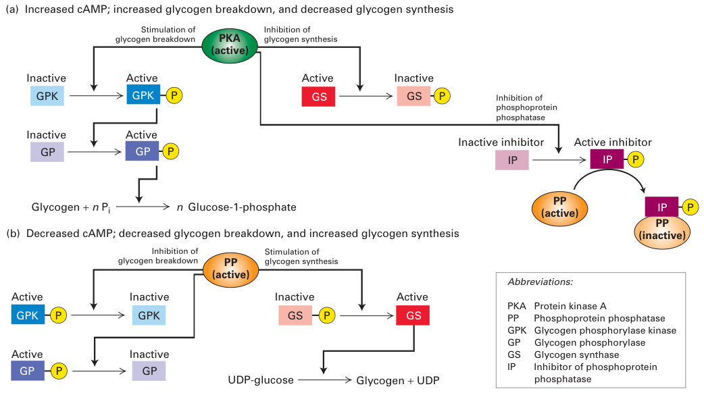
| Stimulation of glycogen breakdown | 刺激糖原分解 |
| Inhibition of glycogen synthesis | 抑制糖原合成 |
| Stimulation of glycogen synthesis | 刺激糖原合成 |
| Inhibition of glycogen breakdown | 抑制糖原分解 |
| Glycogen | 糖原 |
| Glucose-1-phosphate | 1-磷酸葡萄糖 |
| UDP-glucose | UDP-葡萄糖 |
| Protein kinase A (PKA) | 蛋白激酶A（PKA） |
| Phosphoprotein phosphatase (PP) | 磷蛋白磷酸酶（PP） |
| Glycogen phosphorylase kinase (GPK) | 糖原磷酸化酶激酶（GPK） |
| Glycogen phosphorylase (GP) | 糖原磷酸化酶（GP） |
| Glycogen synthase (GS) | 糖原合酶（GS） |
| Inhibitor of phosphoprotein phosphatase (IP) | 磷蛋白磷酸酶的抑制物（IP） |
| Pi | 无机磷酸（Pi） |
| PP (active) | 有活性的PP |
| PP (inactive) | 无活性的PP |
下降时，整个过程被逆转，PKA失活。当PKA无活性时，它不再能磷酸化IP，于是PP变为有活性（图15-28b）。PP移除此前由PKA加到GS和GPK上的磷酸残基，以及由GPK加到GP上的磷酸基团。结果是，GS对糖原的合成增强，而GP对糖原的降解受到抑制。
因此，肾上腺素诱导的糖原分解表现出双重调控：催化糖原降解的酶被激活，而促进糖原合成的酶被抑制。这种双重调控为调节某一特定的细胞应答提供了一种高效机制，是细胞生物学中的普遍现象。
cAMP介导的PKA激活在不同细胞类型中产生多样的应答
在脂肪细胞中，肾上腺素诱导的PKA激活促进脂肪酶的磷酸化与激活，该酶水解储存的甘油三酯，产生游离脂肪酸和甘油。这些脂肪酸被释放到血液中，并被其他组织（如肾、心脏和肌肉）的细胞作为能源摄取（见第12章）。因此，肾上腺素在肝细胞和脂肪细胞这两种不同细胞类型中激活PKA，产生不同的效应。事实上，cAMP
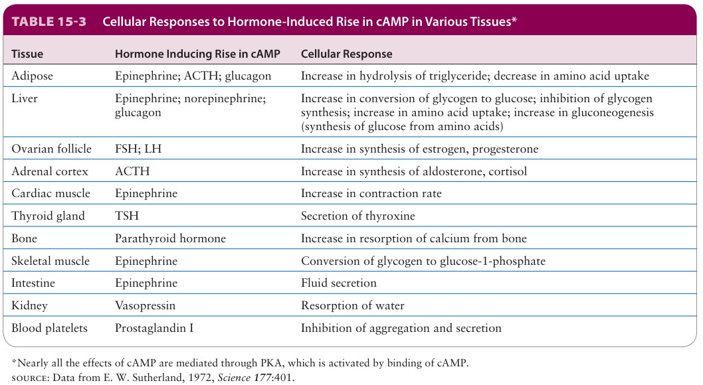
| Tissue | 组织 |
| Hormone Inducing Rise in cAMP | 诱导cAMP升高的激素 |
| Cellular Response | 细胞应答 |
| Adipose | 脂肪 |
| Liver | 肝脏 |
| Ovarian follicle | 卵巢卵泡 |
| Adrenal cortex | 肾上腺皮质 |
| Cardiac muscle | 心肌 |
| Thyroid gland | 甲状腺 |
| Bone | 骨 |
| Skeletal muscle | 骨骼肌 |
| Intestine | 肠 |
| Kidney | 肾 |
| Blood platelets | 血小板 |
和PKA在多种组织中介导了大量由激素诱导的细胞应答（表15-3）。
尽管PKA在不同类型的细胞中作用于不同的底物，它总是磷酸化出现在同一序列基序中的丝氨酸或苏氨酸残基：X-Arg-(Arg/Lys)-X-(Ser/Thr)-Φ，其中X表示任意氨基酸，Φ表示疏水性氨基酸。其他丝氨酸/苏氨酸激酶则磷酸化位于其他序列基序中的靶残基。
cAMP-PKA通路中存在信号放大
我们已经看到，诸如β肾上腺素能受体这样的受体是低丰度蛋白，通常每个细胞只有几百或几千个拷贝。然而，像肾上腺素这样的激素所诱导的细胞应答，可能要求每个细胞产生大量cAMP和活化的酶分子。举例来说，Gαs偶联受体被激活后，胞内cAMP浓度升高到约10−6 M。在一个典型细胞中，这大约是一个边长约15 μm的立方体；该浓度相当于每个细胞200万个cAMP分子。因此，信号必须经过大幅放大，才能诱导出显著的细胞应答。我们已经看到视杆细胞在吸收光子后信号放大是如何发生的。就G蛋白偶联激素受体而言，信号放大之所以可能，部分原因在于受体和G蛋白都能在质膜中快速扩散。一个肾上腺素-GPCR复合物可使多达一百个无活性的Gαs分子
转变为活性形式，此后肾上腺素才从受体上解离。每一个有活性的Gαs∙GTP又激活一个腺苷酸环化酶分子，后者在Gαs∙GTP与之结合的这段时间内催化合成许多cAMP分子。
这种信号转导级联中发生的放大取决于级联的步骤数以及各组分之间的相对浓度。例如，在图15-7和图15-29所示的肾上腺素诱导级联中，低至10−10 M的血液肾上腺素水平即可刺激肝糖原分解和葡萄糖释放。如此幅度的肾上腺素刺激可产生10−6 M的胞内cAMP浓度，放大倍数为104倍。由于在葡萄糖释放之前还有三个催化步骤，因此还可再发生104倍放大，使肾上腺素信号总共放大108倍。在横纹肌中，放大没那么显著，因为糖原分解级联中三个相继的酶——PKA、GPK和GP——的浓度比为1:10:240（最大可能放大240倍）。
CREB将cAMP和PKA与基因转录的激活联系起来
PKA的激活还刺激许多基因的表达，对细胞产生长期效应。例如在肝细胞中，PKA诱导若干参与糖异生的酶的表达——糖异生即把丙酮酸这样的三碳化合物（见图12-3）转化为葡萄糖——从而提高血液中
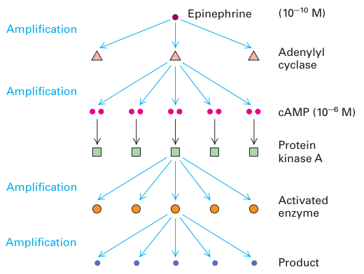
| Epinephrine | 肾上腺素 |
| Adenylyl cyclase | 腺苷酸环化酶 |
| Protein kinase A | 蛋白激酶A（PKA） |
| cAMP | cAMP |
| Activated enzyme | 活化的酶 |
| Product | 产物 |
| Amplification | 放大 |
葡萄糖的浓度，并增强活化的PKA的短期效应。
所有受PKA调控的基因都含有一段顺式作用的DNA序列，即cAMP应答元件（CRE），它结合一种称为CRE结合（CREB）蛋白的转录因子的磷酸化形式，该蛋白只存在于细胞核中。cAMP水平升高并释放出有活性的PKA催化亚基之后，一些催化亚基转运到细胞核中。它们在那里磷酸化CREB蛋白上的丝氨酸133。磷酸化的CREB结合到含CRE的靶基因上，同时也结合一种称为CBP/P300的共激活因子（见图9-31）。CBP/P300把CREB与RNA聚合酶II及其他基因调控蛋白连接起来，从而刺激基因转录（图15-30）。
锚定蛋白把cAMP的效应定位到细胞的特定区域
在许多细胞类型中，cAMP水平的升高可能产生这样一种应答：它在细胞的一个部位是必需的，而在另一个部位却不需要，甚至可能有害。锚定蛋白把PKA家族的成员定位到特定的亚细胞位置，从而把cAMP依赖性应答限制在这些位置。大约50种这样的蛋白（称为A激酶锚定蛋白（AKAP））各自具有双结构域结构；一个结构域决定特定的亚细胞位置
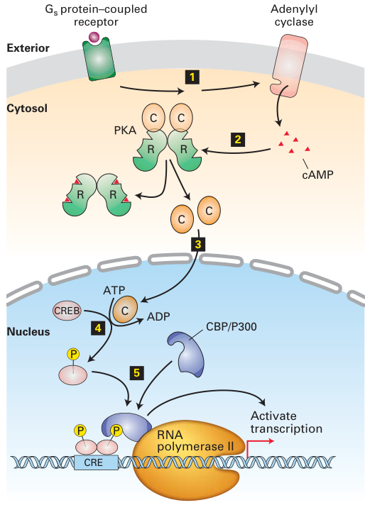
| Exterior | 细胞外 |
| Cytosol | 胞质溶胶 |
| Nucleus | 细胞核 |
| Gs protein–coupled receptor | Gs蛋白偶联受体 |
| Adenylyl cyclase | 腺苷酸环化酶 |
| cAMP | cAMP |
| PKA | PKA |
| CREB | CREB |
| CRE | CRE |
| CBP/P300 | CBP/P300 |
| RNA polymerase II | RNA聚合酶II |
| ATP | ATP |
| ADP | ADP |
| Activate transcription | 激活转录 |
另一个结构域则结合PKA的调节（R）亚基。AKAP在细胞内的空间和时间两个方面调控cAMP与PKA信号传导。
心肌中的一种AKAP把PKA和PDE（将cAMP水解为AMP的酶，见图15-23）都锚定到外核膜上（图15-31）。由于这两种蛋白靠得很近，负反馈得以对cAMP浓度、进而对局部PKA活性进行紧密的局部控制。当cAMP水平因激素刺激而升高时，PKA被激活，并磷酸化、激活包括PDE在内的多种靶蛋白。有活性的PDE反过来水解cAMP，从而使PKA迅速回到无活性状态。PKA定位于核膜附近，也便于其催化亚基进入细胞核，在那里它们磷酸化并激活CREB转录因子（见图15-30）。
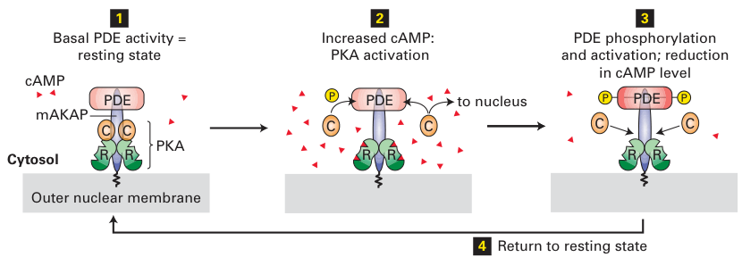
| Outer nuclear membrane | 外核膜 |
| PDE | PDE |
| mAKAP | mAKAP |
| PKA | PKA |
| Cytosol | 胞质溶胶 |
| cAMP | cAMP |
| Basal PDE activity | 基础PDE活性 |
| Resting state | 静息状态 |
| Increased cAMP | cAMP升高 |
| PKA activation | PKA激活 |
| PDE phosphorylation and activation | PDE磷酸化与激活 |
| Reduction in cAMP level | cAMP水平降低 |
| Return to resting state | 回到静息状态 |
| to nucleus | 进入细胞核 |
在某些心肌细胞中，另一种AKAP被系在质膜的胞质溶胶面上，靠近某一类门控Ca2+通道。在心脏中，肾上腺素激活β肾上腺素能受体（作为"战斗或逃跑"反应的一部分）导致PKA催化这些Ca2+通道磷酸化，使它们开放；由此产生的Ca2+内流提高了心肌收缩的速率。AKAP与PKA的结合把该激酶定位到这些通道旁边，从而减少了PKA催化亚基从其产生位点扩散到其Ca2+通道底物本来所需的时间。
多种机制抑制来自GPCR/cAMP/PKA通路的信号
细胞要有效地应答环境变化，不仅必须激活一条信号通路，还必须在应答不再需要时将其下调或终止；否则信号转导通路会保持"开启"过久，或维持在过高的水平，细胞就会过度刺激。
前面我们看到，多种机制能够迅速终止视紫红质信号转导通路，包括刺激与Gαt结合的GTP水解的GAP蛋白、激活鸟苷酸环化酶的Ca2+感受蛋白，以及视紫红质激酶对活化视紫红质的磷酸化及其后抑制蛋白的结合（见图15-21）。事实上，大多数G蛋白偶联受体都受多种机制的调节，这些机制下调其活性，β肾上腺素能受体以及其他偶联Gαs、激活腺苷酸环化酶的受体就是例证。
● 第一，Gαs固有的GTP酶活性把结合的GTP转化为GDP，从而终止其激活
下游靶标腺苷酸环化酶的能力。重要的是，当Gαs与腺苷酸环化酶结合时，与Gαs结合的GTP的水解速率会加快，从而缩短cAMP产生的时间；因此腺苷酸环化酶充当Gαs∙GTP的GAP。更一般地说，大多数（即使不是全部）Gα∙GTP复合物与各自效应蛋白的结合都会加快GTP水解的速率。
● 第二，PDE把cAMP水解为5′-AMP，从而终止细胞应答。因此，要持续激活腺苷酸环化酶并维持升高的cAMP水平，就需要激素以足够高的浓度持续存在。一旦激素浓度下降到足够低，cAMP水平随之下降，所有细胞应答便迅速终止。
大多数GPCR还通过反馈阻遏被下调，即信号通路的终产物阻断该通路的一个早期步骤。例如，当一种Gαs蛋白偶联受体暴露于激素刺激数小时后，受体胞质溶胶结构域中的若干丝氨酸和苏氨酸残基被PKA磷酸化。磷酸化的受体仍能结合其配体，但无法有效地激活Gαs；因此，结合在磷酸化受体上的配体激活腺苷酸环化酶的效率低于结合在非磷酸化受体上的配体。由于任何激活Gαs的激素所诱导的高cAMP水平都会增强PKA的活性，长时间暴露于其中一种激素——比如肾上腺素——不仅使β肾上腺素能受体脱敏，也会使其他被PKA磷酸化的Gαs蛋白偶联受体脱敏，即使它们结合不同的配体（例如肝脏中的胰高血糖素受体）。这种交叉调控称为异源脱敏。
β肾上腺素能受体胞质溶胶结构域中的若干残基（与PKA所磷酸化的那些残基不同）被β肾上腺素能受体激酶（BARK）磷酸化，但只有当肾上腺素或激动剂与受体结合、因而受体处于活性构象时才会发生。BARK与视紫红质激酶属于同一激酶家族，其作用类似于视紫红质激酶对活化视紫红质的磷酸化与下调（见图15-21）。这一过程称为同源脱敏，因为只有处于活性构象的受体才会因磷酸化而失活。
我们提到过，抑制蛋白与高度磷酸化的视蛋白结合，会完全抑制活化视蛋白对偶联G蛋白的激活（见图15-21）。一种相关的蛋白称为β-抑制蛋白，它在沉默其他G蛋白偶联受体（包括β肾上腺素能受体）方面发挥类似作用（图15-32）。
β-抑制蛋白在调节细胞表面受体方面的另一项功能，最初是由这样一个观察提示的：β肾上腺素能受体响应配体结合而从细胞表面消失的过程，可被BARK和β-抑制蛋白的过表达所促进。随后的研究表明，β-抑制蛋白不仅结合磷酸化的GPCR，还结合网格蛋白和一种称为AP2的相关蛋白，这两者是参与质膜内吞的包被囊泡的关键组分（见图15-32；另见第14章）。这些相互作用促进包被小窝的形成以及
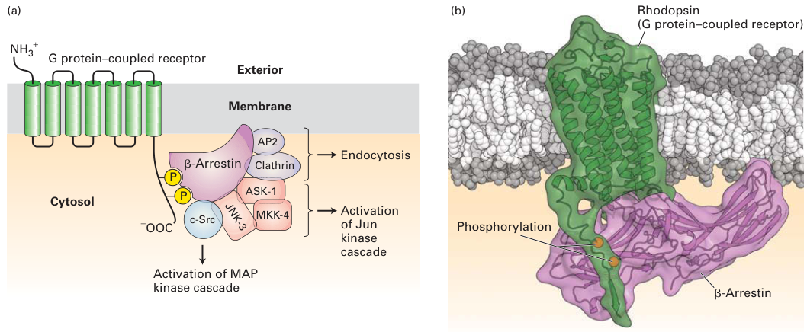
| Clathrin | 网格蛋白 |
| β-Arrestin | β-抑制蛋白 |
| ASK-1 | ASK-1 |
| MKK-4 | MKK-4 |
| JNK-3 | JNK-3 |
| c-Src | c-Src |
| AP2 | AP2 |
| Exterior | 细胞外 |
| Membrane | 膜 |
| Cytosol | 胞质溶胶 |
| Phosphorylation | 磷酸化 |
| Endocytosis | 内吞 |
| Activation of MAP kinase cascade | MAP激酶级联的激活 |
| Activation of Jun kinase cascade | Jun激酶级联的激活 |
| G protein–coupled receptor | G蛋白偶联受体 |
| Rhodopsin (G protein–coupled receptor) | 视紫红质（G蛋白偶联受体） |
相关受体的内吞，从而减少暴露在细胞表面的受体数量。最终，一些被内化的受体在细胞内被降解，另一些则在内体中被去磷酸化。β-抑制蛋白解离之后，重新致敏（去磷酸化）的受体被循环回细胞表面，其方式类似于LDL受体的循环（见第14章）。
除调控受体活性之外，β-抑制蛋白还作为衔接蛋白，把来自G蛋白偶联受体的信号转导到细胞核（见第16章）。GPCR-抑制蛋白复合物充当支架，供多种胞质溶胶激酶结合并被激活（见图15-32），我们将在后续章节中详细讨论这些激酶。这些激酶包括Src，一种胞质溶胶蛋白酪氨酸激酶，它激活MAP激酶通路以及其他导致细胞分裂所需基因转录的通路（见第16章和第19章）。由三种结合在抑制蛋白上的蛋白（包括一种Jun N端激酶（JNK-3））组成的复合物启动一个激酶级联，最终激活Jun转录因子，后者促进某些促生长酶以及其他帮助细胞应答应激的蛋白的表达。因此，BARK–β-抑制蛋白通路原本被认为只是抑制GPCR的信号传导，实际上却起着开关的作用：关掉G蛋白的信号传导，同时开启其他信号通路。β-抑制蛋白的多种功能说明了衔接蛋白在调控信号传导和转导来自细胞表面受体的信号两方面都十分重要。
- 激活Gαs的G蛋白偶联受体结合配体后，会激活膜结合的酶腺苷酸环化酶，后者把ATP转化为第二信使cAMP（见图15-23）。激活Gαi的G蛋白偶联受体结合配体后，则抑制腺苷酸环化酶，使cAMP水平降低（见图15-25）。
- Gαs∙GTP和Gαi∙GTP结合腺苷酸环化酶中的催化结构域，分别激活或抑制该酶（见图15-25和图15-26）。
- cAMP以协同方式结合PKA的调节亚基，释放出有活性的激酶催化亚基（见图15-27）。
- 在肝细胞和肌细胞中，肾上腺素及其他激素诱导的PKA激活发挥双重效应：通过激酶级联抑制糖原合成并刺激糖原分解（见图15-28），从而使可用于生成ATP的葡萄糖增加。
- 在大多数细胞中，PKA介导cAMP的多样化效应（见表15-3）。PKA的底物、以及由此产生的对激素诱导PKA激活的细胞应答，因细胞类型而异。
- 激活GPCR/腺苷酸环化酶/cAMP/PKA信号通路的信号，被第二信使和激酶级联极大放大（见图15-7和图15-29）。
- PKA的激活常导致核内CREB蛋白的磷酸化，后者与共激活因子CBP/P300一起刺激基因转录，从而启动细胞蛋白质组成的长期改变（见图15-30）。
- 锚定蛋白把PKA定位到细胞的特定区域，从而把cAMP的效应限制在特定的亚细胞位置（见图15-31）。
- 来自Gs偶联受体的信号受多种机制下调：第一，Gαs固有的、把结合的GTP转化为GDP的GTP酶活性，在Gαs与腺苷酸环化酶结合时增强（当许多Gα∙GTP复合物与各自效应蛋白结合时就会发生这种情况）；第二，PDE把cAMP水解为5′-AMP，终止细胞应答。
- 大多数GPCR还受反馈阻遏的调控，即通路的终产物（如PKA）阻断该通路的一个早期步骤。与视紫红质一样，β-抑制蛋白与磷酸化β肾上腺素能受体的结合会完全抑制对偶联G蛋白的激活（见图15-32）。
- β肾上腺素能受体被β肾上腺素能激酶（BARK）失活，该激酶磷酸化处于活性构象的受体的胞质溶胶残基。BARK对结合了配体的β肾上腺素能受体的磷酸化，还导致β-抑制蛋白的结合以及受体的内吞。细胞表面受体数量的这种减少，使细胞对后续激素的敏感性降低。
- GPCR-抑制蛋白复合物作为支架，激活多种胞质溶胶激酶，启动级联反应，最终导致许多控制细胞生长的基因被转录激活（见图15-32）。
15.6 触发胞质溶胶与线粒体钙升高的G蛋白偶联受体
钙离子在调控细胞对众多信号的应答中发挥关键作用，许多GPCR以及其他类型的受体都是通过影响胞质溶胶中Ca2+的浓度来对细胞产生效应的。正如我们在第11章所见，胞质溶胶中Ca2+的水平被严格维持在亚微摩尔水平（0.1 μM = 100 nM），这有赖于ATP驱动的Ca2+泵和Na+/Ca2+反向转运体的持续作用，它们将Ca2+离子逆其浓度梯度跨质膜转运到细胞外，或转运入内质网腔。
胞质溶胶Ca2+的少量升高即可诱导多种细胞应答，包括内分泌细胞分泌激素、胰腺腺泡细胞分泌消化酶以及肌肉收缩（表15-4）。例如，乙酰胆碱刺激胰腺和腮腺（唾液腺）分泌细胞上的GPCR，可诱导胞质溶胶Ca2+升高，从而触发分泌小泡与质膜融合，并将其蛋白质内容物释放到细胞外空间。凝血级联反应中的一种酶——凝血酶，与血小板上的GPCR结合。这一结合激活受体并触发胞质溶胶Ca2+升高，进而引起血小板的构象变化，导致血小板聚集，这是凝血过程中防止血液从受损血管漏出的重要步骤。
我们在第12章了解到，线粒体基质中游离Ca2+浓度的升高会加速丙酮酸氧化和ATP生成。因此，在肌肉中，Ca2+浓度的升高既用于诱导收缩，又协同性地增加线粒体ATP合成，为这些收缩提供能量。
本节中，我们首先讨论科学家用于测量细胞器（如内质网和线粒体）中游离Ca2+离子——即未与蛋白质紧密结合的Ca2+离子——浓度的实验工具。我们的主要关注点是一种导致胞质溶胶Ca2+离子浓度升高的重要信号转导机制：GPCR刺激磷脂酶C（PLC）的激活。PLC是一个酶家族，可水解某些磷脂中的磷酸酯键，产生两种第二信使，它们既参与升高胞质溶胶和线粒体基质的
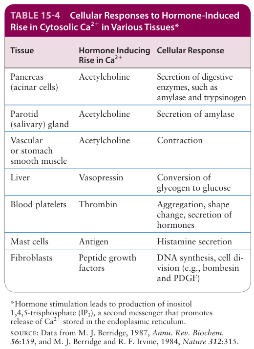
| Tissue | 组织 |
| Hormone Inducing Rise in Ca2+ | 诱导Ca2+升高的激素 |
| Cellular Response | 细胞应答 |
| Pancreas (acinar cells) | 胰腺（腺泡细胞） |
| Parotid (salivary) gland | 腮腺（唾液腺） |
| Acetylcholine | 乙酰胆碱 |
| Vascular or stomach smooth muscle | 血管或胃平滑肌 |
| Liver | 肝 |
| Vasopressin | 血管升压素 |
| Blood platelets | 血小板 |
| Thrombin | 凝血酶 |
| Mast cells | 肥大细胞 |
| Antigen | 抗原 |
| Fibroblasts | 成纤维细胞 |
| Peptide growth factors | 肽类生长因子 |
| DNA synthesis, cell division | DNA合成、细胞分裂 |
| bombesin | 铃蟾肽 |
| PDGF | 血小板衍生生长因子（PDGF） |
| Aggregation, shape change, secretion of hormones | 聚集、形态改变、激素分泌 |
| Conversion of glycogen to glucose | 糖原转化为葡萄糖 |
| Histamine secretion | 组胺分泌 |
| Contraction | 收缩 |
Ca2+水平，又参与激活一个称为蛋白激酶C（PKC）的胞质溶胶激酶家族；PKC反过来影响许多重要的细胞过程，如生长和分化，并改变许多蛋白质的活性。
有些PLC由GPCR激活，正如我们此处所述；另一些则由其他类型的受体激活，将在下一章中介绍。磷脂酶C还产生一些第二信使，它们对肌动蛋白细胞骨架的重塑（见第17章）以及对内吞和囊泡融合所必需的蛋白质的结合（见第14章）十分重要。本节稍后我们将看到，诸如Ca2+这样的第二信使如何帮助细胞整合其对一种以上细胞外信号的应答。在本节的最后部分，我们将看到一个PLC通路如何导致一种气体——一氧化氮（NO）的合成，NO从细胞扩散出去进入相邻细胞，在那里可诱导一种激酶的激活，进而改变若干细胞活动。
线粒体基质、内质网和胞质溶胶中的钙浓度可用靶向荧光蛋白测量
我们在第4章了解到，荧光小分子染料fura-2的酯形式如何从细胞外液自发扩散进入胞质溶胶，fura-2在某一波长下的荧光在结合Ca2+时如何增强，以及
这种染料如何用于测量活细胞胞质溶胶中游离Ca2+的浓度（见图4-12）。有若干种蛋白质在结合Ca2+后也会发光，可在实验中用于测定其他亚细胞区室中的游离Ca2+浓度。
其中一种蛋白质是水母发光蛋白（aequorin），这是一种从水螅纲动物维多利亚多管发光水母（Aequorea victoria）中分离得到的钙激活生物发光蛋白。水母发光蛋白由一个蛋白质亚基组成，可通过重组DNA技术在细胞中表达为融合蛋白，并携带将其靶向到特定细胞器（如内质网腔，见图13-6；或线粒体膜间隙或基质，见图13-26）的信号序列。水母发光蛋白含有三个EF手（见第3章），充当Ca2+的结合位点。当小分子辅基腔肠素（coelenterazine）加入培养基时，它扩散进入细胞并与水母发光蛋白结合，细胞便发出特定波长的光，其强度与该亚细胞空间中游离Ca2+的浓度成正比。
一个亚细胞区室中存在的总钙是游离Ca2+与结合态Ca2+之和：游离Ca2+可由水母发光蛋白以及其他荧光强度与游离Ca2+浓度成正比的钙传感器测得；而在内质网和线粒体中，结合态Ca2+的量被认为远大于游离Ca2+的量。对游离Ca2+的测量表明，尽管在不同类型的静息细胞中浓度可相差很大，但通常Ca2+胞质溶胶 = ~100 nM、Ca2+内质网 = ~400 μM、Ca2+线粒体 = ~100 nM。内质网腔含有若干Ca2+结合蛋白，包括伴侣蛋白钙网蛋白（calreticulin）和钙联蛋白（calnexin）（第605页），它们对Ca2+结合的亲和力低而容量大，可缓冲内质网中的Ca2+。
激素或神经元信号对不同类型细胞的刺激，可使细胞器中游离Ca2+浓度出现相当大的差异，但总是导致Ca2+胞质溶胶升高至约1 μM、Ca2+线粒体升高至约1–10 μM，并使Ca2+内质网降低至约100 μM。Ca2+进出内质网腔和线粒体基质的转运，在控制这些变化的性质、进而控制整个细胞的钙信号传导中起重要作用。
活化的磷脂酶C生成两种源自膜脂磷脂酰肌醇4,5-二磷酸的关键第二信使
若干用于多种信号转导通路的重要第二信使源自膜脂磷脂酰肌醇（PI；图15-33）。这种磷脂中的肌醇基团总是朝向胞质溶胶，可经第16章讨论的各种激酶和磷酸酶的共同作用在一个或多个位点上被可逆地磷酸化。PI的一种衍生物——脂质磷脂酰肌醇4,5-二磷酸[PI(4,5)P2]，是通过向PI逐步添加两个磷酸基团而生成的。随后，PI(4,5)P2被活化的磷脂酶C切割成两种重要的第二信使：1,2-二酰甘油（DAG），一种
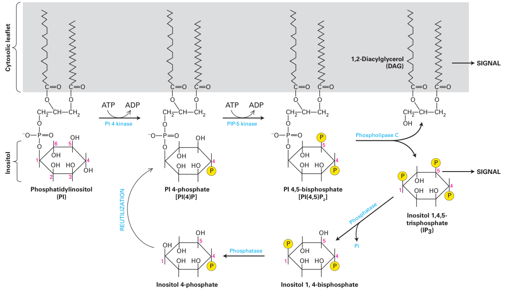
| Cytosolic leaflet | 胞质侧小叶 |
| 1,2-Diacylglycerol (DAG) | 1,2-二酰甘油（DAG） |
| Phosphatidylinositol (PI) | 磷脂酰肌醇（PI） |
| Phospholipase C | 磷脂酶C |
| PI-4 kinase | PI-4激酶 |
| PIP-5 kinase | PIP-5激酶 |
| Phosphatase | 磷酸酶 |
| Pi | Pi |
| PI 4-phosphate [PI(4)P] | PI 4-磷酸[PI(4)P] |
| PI 4,5-bisphosphate [PI(4,5)P2] | PI 4,5-二磷酸[PI(4,5)P2] |
| Inositol 1,4,5-trisphosphate (IP3) | 肌醇1,4,5-三磷酸（IP3） |
| Inositol 1, 4-bisphosphate | 肌醇1,4-二磷酸 |
| Inositol 4-phosphate | 肌醇4-磷酸 |
| ATP | ATP |
| ADP | ADP |
| REUTILIZATION | 再利用 |
亲脂性分子，仍与膜相结合；以及肌醇1,4,5-三磷酸（IP3），它可在胞质溶胶中自由扩散（见图15-33）。我们将涉及这两种第二信使的下游事件统称为IP3/DAG通路。
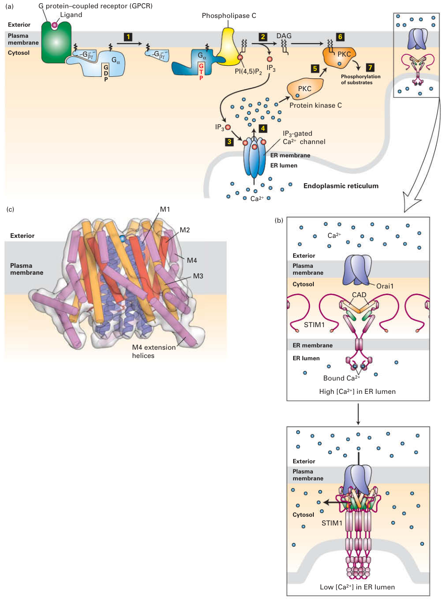
| Endoplasmic reticulum | 内质网 |
| IP3-gated Ca2+ channel | IP3门控Ca2+通道 |
| Exterior | 细胞外 |
| Plasma membrane | 质膜 |
| Phospholipase C | 磷脂酶C |
| G protein–coupled receptor (GPCR) | G蛋白偶联受体（GPCR） |
| Ligand | 配体 |
| Phosphorylation of substrates | 底物磷酸化 |
| Protein kinase C | 蛋白激酶C（PKC） |
| PI(4,5)P2 | PI(4,5)P2 |
| IP3 | IP3 |
| DAG | DAG |
| Cytosol | 胞质溶胶 |
| ER membrane | 内质网膜 |
| ER lumen | 内质网腔 |
| Ca2+ | Ca2+ |
| Gα | Gα |
| Gβγ | Gβγ |
| GTP | GTP |
| GDP | GDP |
| Orai1 | Orai1 |
| STIM1 | STIM1 |
| High [Ca2+] in ER lumen | 内质网腔中高[Ca2+] |
| Bound Ca2+ | 结合态的Ca2+ |
| CAD | CAD |
| M4 extension helices | M4延伸螺旋 |
磷脂酶C由含Gαo或Gαq亚基的G蛋白激活。当相关的GPCR被激素激活时，结合GTP的Gαo或Gαq亚基与Gβγ分离，并与膜上的磷脂酶C结合并使其活化（图15-34a，步骤1）。
活化的磷脂酶C进而将PI(4,5)P2切割为DAG和IP3（见图15-34a，步骤2）。这两种第二信使触发不同、但有时相互关联的下游效应。
从内质网释放Ca2+由IP3触发 配体与激活磷脂酶C的G蛋白偶联受体结合，即使周围细胞外液中不存在Ca2+离子，也能诱导胞质溶胶Ca2+升高。在这种情况下，Ca2+经内质网膜上的IP3门控Ca2+通道的作用，从内质网腔（如前所述，Ca2+在那里可累积到接近毫摩尔的浓度）释放到胞质溶胶中，如图15-34a所示（步骤3和4）。（该通道蛋白家族在结构上与肌肉细胞肌浆网膜中称为兰尼碱受体的电压敏感性Ca2+通道家族相似；见第805页。）这些大型IP3门控通道每一个都由四个相同的亚基组成，每个亚基都在其N端胞质溶胶结构域中含有一个IP3结合位点。IP3结合诱导通道开放，使Ca2+顺其浓度梯度从内质网腔流入胞质溶胶。当把细胞中通常存在的各种磷酸化肌醇加入内质网小泡制品时，只有IP3引起Ca2+离子从小泡中释放。这个简单的实验证明了IP3作用的特异性。
IP3介导的胞质溶胶Ca2+水平升高是短暂的，因为位于质膜和内质网膜中的Ca2+泵会分别主动将Ca2+从胞质溶胶转运到细胞外和运回内质网腔。此外，在生成后1秒内，连接在IP3碳5上的磷酸基团即被水解，产生肌醇1,4-二磷酸（见图15-33）。该化合物不能与IP3门控Ca2+通道结合，因此不刺激Ca2+从内质网释放。
从内质网到线粒体基质的Ca2+转运由IP3触发 在第12章中我们了解到，内质网膜上称为线粒体相关膜（MAM）的特殊区域与线粒体外膜之间的直接接触，会影响线粒体的结构、动态变化和功能。Ca2+受调控地从内质网腔经MAM进入线粒体基质，是这一调节的主要部分（图15-35a）。MAM中的IP3门控Ca2+通道响应胞质溶胶IP3的升高而开放（图15-35a步骤1a）。紧邻MAM的外膜中的电压依赖性阴离子通道（VDAC）通过GRP75蛋白与这些IP3门控Ca2+通道物理连接，能高效地把从内质网腔释放的Ca2+送入膜间隙（步骤2）。随后，线粒体内膜上的线粒体钙单向转运体（MCU）把Ca2+转运到线粒体基质中，在那里它增加ATP合成，并以其他方式增强线粒体活动。
MCU仅在膜间隙存在高浓度Ca2+时才开放。面向膜间隙的MCU调节亚基（图15-35b）
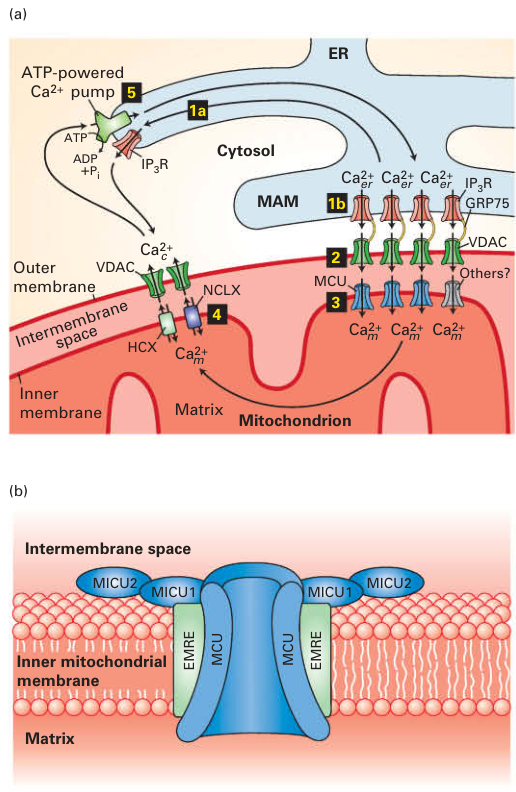
| Ca2+ | Ca2+ |
| ATP-powered Ca2+ pump | ATP驱动的Ca2+泵 |
| ATP | ATP |
| ADP | ADP |
| Pi | Pi |
| Matrix | 基质 |
| VDAC | VDAC |
| MCU | MCU |
| HCX | HCX |
| NCLX | NCLX |
| GRP75 | GRP75 |
| IP3R | IP3R |
| Inner membrane | 内膜 |
| Outer membrane | 外膜 |
| Intermembrane space | 膜间隙 |
| Inner mitochondrial membrane | 线粒体内膜 |
| ER | 内质网 |
| MAM | MAM |
| Mitochondrion | 线粒体 |
| Cytosol | 胞质溶胶 |
| Ca2+ER | 内质网Ca2+ |
| Ca2+cytosol | 胞质溶胶Ca2+ |
| Ca2+matrix | 线粒体基质Ca2+ |
| MICU1 | MICU1 |
| MICU2 | MICU2 |
| EMRE | EMRE |
具有对Ca2+结合亲和力相对较低的Ca2+结合EF手（见第3章）；这些亚基必须结合钙，MCU才能开放。编码其中一个亚基的基因发生突变的个体具有骨骼肌缺陷和学习障碍，这些症状可伴随其他线粒体疾病出现，证明了这些单向转运体在线粒体代谢中的重要性。
为避免线粒体内过量、可能有毒的钙积聚，线粒体基质会逐渐将Ca2+释放到胞质溶胶中。钙首先经Na+/Ca2+和H+/Ca2+反向转运体跨内膜进入膜间隙，然后很可能经VDAC跨过外膜（步骤4）。当胞质溶胶钙经ATP驱动的Ca2+泵进入内质网（步骤5；见图11-10），或被质膜上ATP驱动的Ca2+泵泵出细胞后，钙转运循环即告完成。
钙库操控性质膜Ca2+通道 内质网膜上IP3门控Ca2+通道的持续开放，加上质膜Ca2+泵的运行，最终会耗竭细胞内的Ca2+库，细胞很快就会无法响应激素诱导的IP3而升高胞质溶胶Ca2+水平。膜片钳研究（见图11-22）揭示，质膜上一种称为钙库操控性通道的Ca2+通道在响应内质网Ca2+库耗竭时开放，允许细胞外Ca2+进入胞质溶胶。用shRNA逐一敲低每一种可能的Ca2+通道蛋白的研究（见图6-42）确定了该通道蛋白就是Orai1；Orai1的序列和三维结构与任何其他已知的离子通道蛋白都不同（见图15-34c），这部分解释了为何它如此难以被鉴定为钙库操控性通道。
内质网的Ca2+感应蛋白是STIM，一种内质网膜上的跨膜蛋白（见图15-34b）。位于内质网膜腔侧的一个EF手（与钙调蛋白中的类似，见图3-33）在腔内Ca2+水平高时结合Ca2+。随着内质网中Ca2+库被耗竭，STIM蛋白失去其结合的Ca2+，发生寡聚化，并以一种未知的方式重新定位到靠近质膜的内质网膜区域（见图15-34b）。在那里，STIM蛋白的CAD结构域与Orai1结合并触发其开放，允许细胞外Ca2+内流（见图15-34c）。在培养细胞中联合过表达Orai和STIM会导致Ca2+内流显著增加，这确立了这两种蛋白是钙库操控性Ca2+通路的关键组分。
触发胞质溶胶Ca2+浓度尖峰的反馈环路 某些G蛋白偶联受体的持续激活会诱导胞质溶胶Ca2+水平出现快速、重复的尖峰（图15-36）。胞质溶胶Ca2+水平的这些振荡是由胞质溶胶Ca2+浓度与IP3门控Ca2+通道之间复杂的反馈相互作用引起的。静息细胞中亚微摩尔水平的胞质溶胶Ca2+会增强
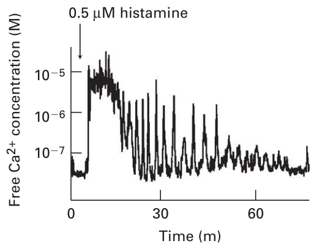
| Free Ca2+ concentration (M) | 游离Ca2+浓度（M） |
| Time (min) | 时间（min） |
| histamine | 组胺 |
这些通道在IP3升高时的开放，从而促进细胞表面G蛋白偶联受体受激素刺激后胞质溶胶Ca2+的快速上升。然而，尖峰峰值时达到的高胞质溶胶Ca2+水平，会通过降低Ca2+通道对IP3的亲和力，抑制IP3进一步诱导Ca2+从内质网库释放。结果，IP3门控Ca2+通道关闭，随着Ca2+被泵入内质网腔或泵出细胞，胞质溶胶Ca2+水平迅速下降。因此，胞质溶胶Ca2+是IP3门控Ca2+通道的反馈抑制剂，而后者开放时会触发胞质溶胶Ca2+升高。举例来说，这一机制产生的钙离子振荡发生在分泌黄体生成素（LH）的垂体腺细胞中，LH在控制排卵乃至女性生育力方面起重要作用。LH的分泌由黄体生成素释放激素（LHRH）与这些细胞表面的G蛋白偶联受体结合所诱导；LHRH结合诱导反复的Ca2+尖峰。每个Ca2+尖峰诱导几个含LH的分泌小泡发生胞吐，推测是那些靠近质膜的小泡。
Ca2+-钙调蛋白复合物介导对细胞外信号的许多细胞应答
普遍存在的胞质溶胶小蛋白钙调蛋白作为一种多用途开关蛋白，介导Ca2+离子的许多细胞效应。Ca2+与钙调蛋白上四个位点的结合会触发重大的构象变化，使钙调蛋白能够结合并调节许多酶和其他蛋白质的活性（见图3-33）。由于四个Ca2+离子以协同方式与钙调蛋白结合，胞质溶胶Ca2+水平的微小变化即可导致活性钙调蛋白水平的大幅变化。一种被深入研究
的由Ca2+-钙调蛋白复合物激活的酶是肌球蛋白轻链激酶，它调节肌球蛋白的活性，从而调节平滑肌细胞的收缩（见第17章）。另一种是PDE，即把cAMP降解为5′-AMP并终止其效应的酶（见图15-31）。因此这一反应把Ca2+与cAMP联系起来，这是两条第二信使介导的通路相互作用以精细调节细胞应答的众多例子之一。
在许多细胞中，受体经磷脂酶C生成的IP3进行信号传导后引起的胞质溶胶Ca2+升高，会导致特定转录因子的激活。在某些情况下，Ca2+-钙调蛋白激活蛋白激酶，后者进而磷酸化转录因子，从而改变它们的活性并调节基因表达。在另一些情况下，Ca2+-钙调蛋白激活一种磷酸酶，它从转录因子上移除磷酸基团，从而激活该转录因子。这一机制的一个重要例子涉及免疫系统的T细胞（见第23章）。
DAG激活蛋白激酶C
疏水性的DAG经磷脂酶C催化PI(4,5)P2水解生成后（见图15-34a），仍与质膜相结合。DAG的主要功能是激活一个统称为蛋白激酶C（PKC）的蛋白激酶家族。在没有激素刺激时，蛋白激酶C以可溶性胞质溶胶蛋白的形式存在，无催化活性。胞质溶胶Ca2+水平的升高使蛋白激酶C转位到质膜的胞质侧小叶，在那里它可以与膜结合的DAG相互作用（见图15-34a，步骤5和6）。因此，PKC的激活同时依赖于Ca2+离子和DAG的增加，提示IP3/DAG通路的两个分支之间存在相互作用。
PKC在不同细胞中的激活导致多种多样的细胞应答，表明它在细胞生长和代谢的许多方面起关键作用。在许多细胞中，PKC磷酸化定位于胞质溶胶的转录因子，触发它们移入细胞核，在那里激活细胞分裂所必需的基因。在肝细胞中，PKC通过磷酸化并由此抑制糖原合酶来帮助调节糖原代谢，我们接下来就会看到这一点。
Ca2+与cAMP两种第二信使的整合调节糖原分解
所有细胞都不断接收来自其环境的多种信号，包括激素、代谢物以及NO和氧气等气体水平的变化。所有这些信号都必须被整合。糖原分解为葡萄糖（糖原分解）为细胞如何整合其对一种以上信号的应答提供了极好的例子。正如15.5节所讨论的，肾上腺素刺激肌肉和肝细胞会导致第二信使cAMP升高，从而促进糖原分解（见图15-28a）。在肌肉和肝细胞中，其他信号通路也产生同样的细胞应答，即糖原分解增强。
在横纹肌细胞中（见图17-30），神经冲动的刺激引起Ca2+离子从肌浆网释放，胞质溶胶Ca2+浓度升高，从而触发肌肉收缩。胞质溶胶Ca2+的升高还使Ca2+得以结合到糖原磷酸化酶激酶（GPK）的δ亚基上——该亚基就是钙调蛋白——从而激活γ亚基的激酶催化活性，进而刺激糖原降解为葡萄糖1-磷酸，为持久的肌肉收缩提供燃料。
血液中肾上腺素浓度的升高会导致腺苷酸环化酶活化以及cAMP浓度升高。回想一下，cAMP依赖性PKA的磷酸化也能激活GPK（见图15-28），而GPK的最大激活乃至糖原分解的最大激活，同时需要磷酸化和Ca2+。因此，这一糖原分解的关键调节因子在肌肉中同时受神经调节和激素调节（图15-37a）。
在肝细胞中，激素诱导的效应蛋白磷脂酶C的激活也通过生成第二信使DAG和IP3来调节糖原分解。正如我们刚刚了解到的，IP3诱导胞质溶胶Ca2+升高，与肌肉细胞中一样激活GPK，导致糖原降解。此外，DAG与Ca2+升高的联合效应激活蛋白激酶C（见图15-34）。这种激酶随后磷酸化并由此抑制糖原合酶，降低糖原合成速率。由此我们看到多条胞内信号转导通路如何相互作用来调节一个重要的代谢过程（图15-37b）。
回想一下，当Ca2+离子结合到δ（钙调蛋白）亚基上、且α亚基已被PKA磷酸化时，GPK活性最高。在肌肉细胞受到神经元刺激后，即使未被磷酸化，GPK的活性也足以在没有激素刺激的情况下使糖原降解。Ca2+与δ亚基的结合可能对GPK的酶活性至关重要。PKA对α亚基以及β亚基的磷酸化提高了δ亚基对Ca2+的亲和力，使Ca2+离子能在静息细胞中所见的亚微摩尔Ca2+浓度下与酶结合。
信号诱导的血管平滑肌舒张由Ca2+-一氧化氮-cGMP激活的蛋白激酶G通路介导
19世纪末，阿尔弗雷德·诺贝尔（诺贝尔奖的创立者）想出了如何改进硝化甘油，使其成为可用于爆破岩石和采矿的炸药，但一个多世纪以来，硝化甘油还获得了一种重要用途：治疗心绞痛那种剧烈的胸痛。已知它在体内会缓慢分解为一氧化氮（NO），后者使围绕并"供养"心肌本身的血管的平滑肌细胞舒张，从而增大血管直径，增加含氧血液向心肌的流动。现代医学中最引人入胜的发现之一是，NO这种存在于汽车尾气中的有毒气体，实际上是一种天然信号分子。■
NO在诱导平滑肌舒张中作用的决定性证据，来自一组把乙酰胆碱加入围绕血管的平滑肌细胞实验制备物中的实验（见图1-25）。直接把乙酰胆碱施加到这些细胞上会使它们收缩，这符合血管肌细胞的预期。但把乙酰胆碱加到离体小血管的管腔中，却使这些血管中的平滑肌舒张而非收缩。随后的研究表明，响应乙酰胆碱时，衬在血管腔内的内皮细胞释放某种物质，该物质进而触发肌细胞舒张。这种物质原来就是NO。
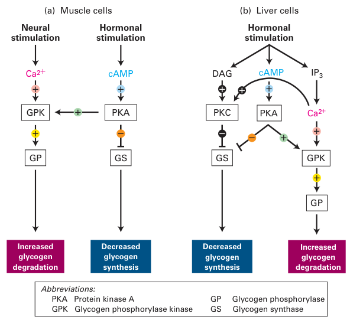
| Abbreviations | 缩写 |
| PKA | 蛋白激酶A（PKA） |
| GPK | 糖原磷酸化酶激酶（GPK） |
| GP | 糖原磷酸化酶（GP） |
| GS | 糖原合酶（GS） |
| Muscle cells | 肌肉细胞 |
| Liver cells | 肝细胞 |
| Neural stimulation | 神经刺激 |
| Hormonal stimulation | 激素刺激 |
| Ca2+ | Ca2+ |
| cAMP | cAMP |
| DAG | DAG |
| IP3 | IP3 |
| PKC | PKC |
| Increased glycogen degradation | 糖原降解增加 |
| Decreased glycogen synthesis | 糖原合成减少 |
我们现在知道，血管内皮细胞含有一种与Gαo蛋白偶联、可结合乙酰胆碱并激活磷脂酶C的GPCR，导致胞质溶胶Ca2+水平升高。Ca2+与钙调蛋白结合后，Ca2+/钙调蛋白复合物刺激NO合酶的活性，该酶催化O2与氨基酸精氨酸生成NO。由于NO的半衰期很短（2–30秒），它只能从合成位点在组织中局部扩散。特别是，NO从血管内皮细胞扩散进入相邻的平滑肌细胞，在那里触发肌肉舒张，从而增大血管直径（血管舒张）（图15-38）。
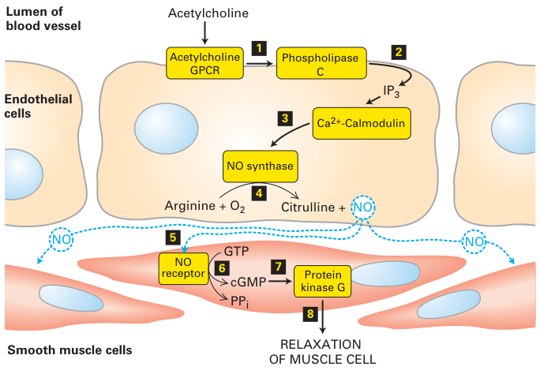
| Smooth muscle cells | 平滑肌细胞 |
| Acetylcholine | 乙酰胆碱 |
| GPCR | GPCR |
| IP3 | IP3 |
| Arginine + O2 | 精氨酸 + O2 |
| GTP | GTP |
| cGMP | cGMP |
| RELAXATION OF MUSCLE CELL | 肌细胞舒张 |
| NO receptor | NO受体 |
| Phospholipase C | 磷脂酶C |
| Ca2+-Calmodulin | Ca2+-钙调蛋白 |
| NO synthase | NO合酶 |
| Lumen of blood vessel | 血管腔 |
| Endothelial cells | 内皮细胞 |
| Protein kinase G | 蛋白激酶G |
| PPi | PPi |
| Citrulline + NO | 瓜氨酸 + NO |
| NO | NO |
NO对平滑肌的效应由第二信使cGMP介导，cGMP由平滑肌细胞表达的一种胞质溶胶NO受体生成。NO与该受体中血红素基团的结合导致构象变化，增加其内在的鸟苷酸环化酶活性，从而使胞质溶胶cGMP水平升高。cGMP的大部分效应由一种cGMP依赖性蛋白激酶——也称为蛋白激酶G（PKG）——介导，其调节方式与PKA相似，只是调节结构域是PKG多肽的一部分。这个N端结构域含有一段可与激酶结构域结合并抑制其活性的假底物片段，以及两个cGMP结合位点。cGMP的结合诱导调节结构域的构象变化，使假底物不能再抑制PKG激酶。在血管平滑肌中，PKG激活一条导致细胞舒张、进而血管扩张的信号通路。这种扩张部分源于对内质网中Ca2+通道的抑制（见图15-34a）以及由此导致的胞质溶胶Ca2+浓度下降；在第17章（第808页）我们将了解到，在平滑肌中，胞质溶胶Ca2+的降低会导致调节性肌球蛋白轻链的磷酸化减少、肌动蛋白-肌球蛋白收缩结构的解体以及肌肉收缩的抑制。在血管平滑肌细胞中，cGMP通过蛋白激酶G间接发挥作用，这与视杆细胞不同——在视杆细胞中，cGMP通过结合并开放质膜上的阳离子通道直接发挥作用（见图15-20）。
cGMP水解酶PDE的抑制剂会使血管平滑肌细胞中cGMP升高，它们最初是作为男性型脱发的治疗方法开发的。一项大型临床试验显示它们未能促进头发生长，但人们注意到一个重要的副作用——勃起持续时间延长。随后，几种PDE抑制剂很快被开发用于治疗勃起功能障碍。我们在此略去细节，但任何感兴趣的读者都能很快查明这些广泛使用的药物是如何发挥作用的。■
- 胞质溶胶Ca2+的少量升高即可在不同细胞中诱导多种应答，包括激素分泌、肌肉收缩和血小板聚集（见表15-4）。
- 许多激素与偶联到含Gαo或Gαq亚基的G蛋白的GPCR结合。被结合GTP的Gαo或Gαq激活的效应蛋白是一种磷脂酶C。
- 磷脂酶C切割一种称为PI(4,5)P2的磷脂，生成两种第二信使：可扩散的IP3和膜结合的DAG（见图15-33）。
- IP3触发内质网中IP3门控Ca2+通道的开放以及胞质溶胶游离Ca2+的升高。
- 内质网中IP3门控Ca2+通道的开放还会导致线粒体基质中Ca2+增加以及ATP合成加速（见图15-35）。
- 内质网Ca2+库的耗竭导致质膜钙库操控性Ca2+通道开放以及Ca2+从细胞外介质内流（见图15-34b）。
- Ca2+-钙调蛋白复合物调节许多不同蛋白质的活性，包括PDE以及控制各种转录因子活性的蛋白激酶和磷酸酶。
- 响应胞质溶胶Ca2+升高，蛋白激酶C被招募到质膜，在那里被DAG激活（见图15-34a）。
- 糖原分解与合成由第二信使Ca2+和cAMP协同调节，二者的水平分别受神经刺激和激素刺激的调控（见图15-37）。
- 刺激内皮细胞上的乙酰胆碱GPCR会诱导胞质溶胶Ca2+升高以及随后NO的合成。NO扩散进入周围的平滑肌细胞后，激活胞内的鸟苷酸环化酶以合成cGMP。由此引起的cGMP升高导致蛋白激酶G激活，后者触发一条导致肌肉舒张和血管扩张的通路（见图15-38）。
访问LaunchPad可获取学习工具并进一步了解本章内容：展望未来、经典实验15-1"信号转导的摇篮时期"、GTP刺激cAMP合成的研究、
分析数据，以及包括视频、动画和测验在内的附加学习工具。
关键术语
复习题
- 1.大多数细胞信号传导系统都有哪些共同特征？
- 2.由可溶性细胞外分子介导的信号传导可分为内分泌、旁分泌或自分泌。请说明这三种细胞信号传导方式有何不同。生长激素由位于脑底部的垂体分泌，并通过位于肝脏上的生长激素受体发挥作用。这是内分泌、旁分泌还是自分泌信号传导的例子？为什么？
- 3.一种配体可与两种不同的受体结合，对受体1的Kd值为10−7 M，对受体2的Kd值为10−9 M。该配体对哪种受体表现出更高的亲和力？如果游离配体浓度为10−8 M，请计算受体1和受体2中已结合配体的受体比例（[RL]/RT）。
- 4.要理解一条信号通路如何运作，通常需要分离细胞表面受体，并测定不同条件下下游效应蛋白的活性。如何利用亲和层析分离细胞表面受体？可用什么技术测定配体刺激的细胞中活化G蛋白（GTP结合形式）的量？请描述你会采用的方法。
- 5.七次跨膜结构域的G蛋白偶联受体如何跨质膜传递信号？回答时请包含受体响应配体结合所发生的构象变化。
- 6.起信号转导作用的异三聚体G蛋白由α、β和γ三个亚基组成。Gα亚基是一种GTP酶开关蛋白，依据其结合的是GTP还是GDP而在活性状态与非活性状态之间循环。请回顾由异三聚体G蛋白介导的、配体诱导效应蛋白活化的各个步骤。假设你分离到一个GTP酶活性增强的突变型Gα亚基，该突变会对G蛋白和效应蛋白产生什么影响？
- 7.请说明如何利用FRET监测肾上腺素受体活化后Gαs与腺苷酸环化酶的结合。
- 8.以下哪些步骤会放大细胞中肾上腺素的信号应答：受体激活G蛋白、G蛋白激活腺苷酸环化酶、cAMP激活PKA，还是PKA磷酸化糖原磷酸化酶激酶（GPK）？哪种变化对信号放大的影响更大：肾上腺素受体数目的增加，还是Gαs蛋白数目的增加？
- 9.由霍乱弧菌产生的霍乱毒素会使感染者出现水样腹泻。霍乱毒素这一效应的分子基础是什么？
- 10.视觉中的视紫红质与心肌中的毒蕈碱型乙酰胆碱受体都通过G蛋白与离子通道偶联。请描述这两个系统的相似之处与不同之处。
- 11.肾上腺素既能与β肾上腺素能受体结合，也能与α肾上腺素能受体结合。请描述肾上腺素与这两类受体结合后，对效应蛋白腺苷酸环化酶所产生的相反作用。请描述向β肾上腺素能受体加入激动剂或拮抗剂对腺苷酸环化酶活性的影响。
- 12.在肝脏和肌肉中，肾上腺素对cAMP途径的刺激会激活糖原分解并抑制糖原合成；而在脂肪组织中，肾上腺素激活甘油三酯的水解，在其他细胞中则引起多种多样的其他应答。在这些细胞的cAMP信号通路中，哪一步决定了细胞的应答？
- 13.持续暴露于其配体的Gαs蛋白偶联受体会导致一种称为脱敏的现象。请描述受体脱敏的几种分子机制。受体如何被重置回其原来的敏感状态？缺少丝氨酸或苏氨酸磷酸化位点的突变型受体会对细胞产生什么影响？
- 14.何为A激酶锚定蛋白（AKAP）的用途？请描述AKAP在心肌细胞中如何发挥作用。
- 15.肌醇1,4,5-三磷酸（IP3）和二酰甘油（DAG）是由活化的磷脂酶C裂解磷脂酰肌醇4,5-二磷酸[PI(4,5)P2]所产生的第二信使分子。请描述IP3在引起胞质溶胶Ca2+浓度升高中的作用。细胞如何恢复胞质溶胶Ca2+的静息水平？DAG的主要功能是什么？
- 16.第3章给出钙调蛋白EF手形结构结合Ca2+的Kd为10−6 M。许多蛋白对其各自的配体具有高得多的亲和力。为什么钙调蛋白这种特定的亲和力对Ca2+信号传导过程（例如由IP3生成所启动的过程）很重要？
- 17.细胞对cAMP的大多数短期生理应答都是由PKA活化介导的。另一种常见的第二信使是cGMP。cGMP在视杆细胞和平滑肌细胞中的靶标是什么？
参考文献
研究细胞表面受体与信号转导蛋白
Flock, T., et al. 2015. Universal allosteric mechanism for Gα activation by GPCRs. Nature, doi:10.1038/nature14663.
Garland, S. 2013. Are GPCRs still a source of new targets? J. Biomol. Screen. 18:947–966.
Grecco, H., M. Schmick, and P. Bastiaens. 2011. Signaling from the living plasma membrane. Cell144:897–909.
Gross, A., and H. F. Lodish. 2006. Cellular trafficking and degradation of erythropoietin and NESP. J. Biol. Chem.281: 2024–2032.
Scott, J. D., et al., 2013. Creating order from chaos: cellular regulation by kinase anchoring. Annu. Rev. Pharmacol. 53:187–210.
Taylor, S. S., and A. Kornev. 2011. Protein kinases: evolution of dynamic regulatory proteins. Trends Biochem. Sci.36:65–77.
G蛋白偶联受体：结构与机制
Audel, M., and M. Bouvier. 2012. Restructuring G-protein- coupled receptor activation. Cell151:14–23.
Benovic, J. 2012. G-protein-coupled receptors signal victory. Cell 151:1–3. (A review of the research leading to the 2011 Nobel Prize.)
Irannejad, R., et al. 2013. Conformational biosensors reveal GPCR signalling from endosomes. Nature495:534–538.
Tesmer, J. 2010. The quest to understand heterotrimeric G protein signalling. Nat. Struct. Mol. Biol. 17:650–652.
调控离子通道的G蛋白偶联受体
Calvert, P., et al. 2006. Light-driven translocation of signaling proteins in vertebrate photoreceptors. Trends Cell Biol.16:560–568.
Hofmann, K. P., et al. 2009. A G protein-coupled receptor at work: the rhodopsin model. Trends Biochem. Sci.34:540–552.
Pearring, J. N. 2013. Protein sorting, targeting and trafficking in photoreceptor cells. Prog. Retin. Eye Res.36:24–61.
Smith, S. O. 2010. Structure and activation of the visual pigment rhodopsin. Annu. Rev. Biophys.39:309–328.
激活或抑制腺苷酸环化酶的G蛋白偶联受体
Agius, L. 2010. Physiological control of liver glycogen metabo- lism: lessons from novel glycogen phosphorylase inhibitors. Mini-Rev. Med. Chem.10:1175–1187.
DeWire, S., et al. 2007. β-Arrestins and cell signaling. Annu. Rev. Physiol.69:483–510.
Lefkowitz, R. J., and S. K. Shenoy. 2005. Transduction of receptor signals by β-arrestins. Science308:512–517.
Shula, A., et al. 2014. Visualization of arrestin recruitment by a G-protein-coupled receptor. Nature512:218–222.
Somsak, L., et al. 2008. New inhibitors of glycogen phosphory- lase as potential antidiabetic agents. Curr. Med. Chem.15: 2933–2983.
Taylor, S. S., et al. 2012. Assembly of allosteric macromo- lecular switches: lessons from PKA. Nat. Rev. Mol. Cell Biol. 13:646–658.
触发胞质溶胶与线粒体钙升高的G蛋白偶联受体
Hoflich, K. P., and M. Ikura. 2002. Calmodulin in action: diversity in target recognition and activation mechanisms. Cell 108:739–742.
Hogan, P. G., R. S. Lewis, and A. Rao. 2010. Molecular basis of calcium signaling in lymphocytes: STIM and ORAI. Annu. Rev. Immunol.28:491–533.
Kaufman, R., and J. Amphora. 2014. Calcium trafficking integrates endoplasmic reticulum function with mitochondrial bioenergetics. Biochim. Biophys. Acta1843:2233–2239.
Parekh, A. 2011. Decoding cytosolic Ca2+ oscillations. Trends Biochem. Sci.36:78–87.
Soboloff, J., et al. 2012. STIM proteins: dynamic calcium signal transducers. Nat. Rev. Mol. Cell Biol. 13:549–565.
Zhou, Y., et al. 2010. Pore architecture of the ORAI1 store-operated calcium channel. P. Natl Acad. Sci. USA107: 4896–4901.